Quảng cáo đối thủ · tam-lop-poly
Meta Ad Library (Việt Nam) · chỉ QC đang chạy · cào lúc 29/10/2026 05:54 · 104 QC, 66 creative, 36 đối thủ có QC
python3 landing_crawl.py --project tam-lop-poly rồi chạy lại analyze để có loại trang đích, Meta Pixel và ảnh chụp.Toàn cảnh
Nhận định nhanh
- 36/37 đối thủ trong nhóm Đối thủ đang chạy QC; Mái Nhựa Poly & Mái Kính Hà Nội không có QC nào lúc cào.
- Chạy nhiều nhất: SL - Tấm Nhựa Lấy Sáng Polycarbonate 29 QC (28%), Nhà máy sản xuất nhựa Polycarbonate 6 QC (6%), Mái Che Vina 6 QC (6%). Ba đối thủ này chiếm 39% số QC của nhóm.
- Loại chiến dịch (suy luận): Tin nhắn 100%.
- Nhà máy sản xuất nhựa Polycarbonate ra nhiều ý tưởng mới nhất: 2 mẫu mới trong 14 ngày (chạy thành 6 QC).
- QC sống lâu nhất: SL - Tấm Nhựa Lấy Sáng Polycarbonate 842 ngày (Số điện thoại, Video).
- Định dạng: Video 55%, Nhiều ảnh 42%, Ảnh đơn 3%.
Loại chiến dịch (suy luận)
Nhận xét: 100% QC là Tin nhắn, tức là nhóm này chủ yếu kéo khách vào inbox để tư vấn.
Tầng phễu
Nhận xét: 100% QC nằm ở tầng Chuyển đổi, tầng Nhận biết chỉ 0%. Đối thủ dồn tiền vào chốt khách, rất ít nội dung nuôi dưỡng: đây là khoảng trống nếu muốn khác biệt bằng nội dung kiến thức.
Nhận biết = like trang, tương tác, video view · Cân nhắc = traffic về bài viết / landing / form ngoài · Chuyển đổi = cài app, lead form, tin nhắn, chuyển đổi web.
Trang đích
Nhận xét: 0% QC đưa thẳng về kho ứng dụng.
Định dạng
Nhận xét: Định dạng chủ lực là Video (55%).
Luồng chạy của nhóm Đối thủ
Nhận xét: Công thức hay gặp nhất: chủ đề Giá / báo giá → Tin nhắn → Messenger (75 QC, 72%). Muốn cạnh tranh trực diện thì đây là luồng cần so ưu đãi và trải nghiệm.
So sánh đối thủ
Nhận xét: SL - Tấm Nhựa Lấy Sáng Polycarbonate có nhiều mẫu nhất (5 mẫu, 29 QC). Nhà máy sản xuất nhựa Polycarbonate ra nhiều mẫu mới nhất trong 14 ngày (2). Mái Che Vina giữ mẫu lâu nhất (5 mẫu chạy ≥ 30 ngày, một mẫu thường chạy 425 ngày): có mẫu đang hiệu quả đáng xem trước. SL - Tấm Nhựa Lấy Sáng Polycarbonate nhân bản mạnh nhất (×5,8 QC mỗi mẫu), tức là đang đẩy mạnh một số ít mẫu. Mái Nhựa Poly & Mái Kính Hà Nội không chạy QC lúc cào.
| Đối thủ | Mẫu đang chạyvà tổng số QC | Mẫu mớibắt đầu trong 14 ngày | Mẫu thường chạymột nửa số mẫu chạy lâu hơn | Mẫu ≥ 30 ngàydấu hiệu mẫu hiệu quả | Mỗi mẫu chạytrung bình bao nhiêu QC | Loại chiến dịch% số QC, suy luận | Trang đích chính · ưu đãi | |
|---|---|---|---|---|---|---|---|---|
| SL - Tấm Nhựa Lấy Sáng Polycarbonate | 5 29 QC | 0 | 824 ngày lâu nhất 842 | 3 | ×5,8 nhiều nhất ×8 | Tin nhắn100% | Messenger | Ad Library ↗ |
| Nhà máy sản xuất nhựa Polycarbonate | 2 6 QC | 2 | 7 ngày lâu nhất 7 | 0 | ×3,0 nhiều nhất ×4 | Tin nhắn100% | Messenger | Ad Library ↗ |
| Mái Che Vina | 5 6 QC | 0 | 425 ngày lâu nhất 426 | 5 | ×1,2 nhiều nhất ×2 | Tin nhắn100% | Messenger | Ad Library ↗ |
| Tấm Nhựa Polycarbonate Giá Thợ Thi Công | 5 5 QC | 1 | 76 ngày lâu nhất 172 | 4 | ×1,0 nhiều nhất ×1 | Tin nhắn100% | Messenger | Ad Library ↗ |
| Tổng Kho Tấm Nhựa Vinalight | 4 4 QC | 0 | 49 ngày lâu nhất 49 | 4 | ×1,0 nhiều nhất ×1 | Tin nhắn100% | Messenger | Ad Library ↗ |
| Nhựa Kính Cường Lực TOP ASIA | 3 4 QC | 0 | 120 ngày lâu nhất 120 | 2 | ×1,3 nhiều nhất ×2 | Tin nhắn100% | Messenger | Ad Library ↗ |
| Green Roofing Vietnam | 4 4 QC | 0 | 82 ngày lâu nhất 160 | 4 | ×1,0 nhiều nhất ×1 | Tin nhắn100% | Messenger | Ad Library ↗ |
| Tấm Nhựa Thông Minh VinaHome | 1 3 QC | 0 | 110 ngày lâu nhất 110 | 1 | ×3,0 nhiều nhất ×3 | Tin nhắn100% | Messenger | Ad Library ↗ |
| Nhà Máy Tấm Nhựa Polycarbonate Kiên An | 2 3 QC | 0 | 134 ngày lâu nhất 143 | 2 | ×1,5 nhiều nhất ×2 | Tin nhắn100% | Messenger | Ad Library ↗ |
| Tấm nhựa Polycarbonate Đại Việt | 2 3 QC | 0 | 118 ngày lâu nhất 149 | 2 | ×1,5 nhiều nhất ×2 | Tin nhắn100% | Messenger | Ad Library ↗ |
| Tấm Poly Lấy Sáng Krystal | 1 3 QC | 0 | 25 ngày lâu nhất 25 | 0 | ×3,0 nhiều nhất ×3 | Tin nhắn100% | Messenger | Ad Library ↗ |
| Nhà Máy Nhựa Lấy Sáng Poly | 2 3 QC | 2 | 1 ngày lâu nhất 1 | 0 | ×1,5 nhiều nhất ×2 | Tin nhắn100% | Messenger | Ad Library ↗ |
| Hải Nam - Chuyên Tấm Lợp Poly Lấy Sáng | 2 2 QC | 2 | 0 ngày lâu nhất 1 | 0 | ×1,0 nhiều nhất ×1 | Tin nhắn100% | Messenger | Ad Library ↗ |
| Nhà Máy Nhựa Lấy Sáng VIỆT NAM | 2 2 QC | 1 | 54 ngày lâu nhất 105 | 1 | ×1,0 nhiều nhất ×1 | Tin nhắn100% | Messenger | Ad Library ↗ |
| Nhà Máy Nhựa Lấy Sáng Vinahome | 2 2 QC | 2 | 6 ngày lâu nhất 10 | 0 | ×1,0 nhiều nhất ×1 | Tin nhắn100% | Messenger | Ad Library ↗ |
| Tập Đoàn Nhựa Lấy Sáng Việt Nam | 1 2 QC | 0 | 116 ngày lâu nhất 116 | 1 | ×2,0 nhiều nhất ×2 | Tin nhắn100% | Messenger | Ad Library ↗ |
| Tổng kho tấm nhựa Polycarbonate Ngọc Bích | 2 2 QC | 0 | 76 ngày lâu nhất 76 | 2 | ×1,0 nhiều nhất ×1 | Tin nhắn100% | Messenger | Ad Library ↗ |
| Mái Nhôm Nhựa Cường Lực - Việt Poly | 2 2 QC | 2 | 5 ngày lâu nhất 5 | 0 | ×1,0 nhiều nhất ×1 | Tin nhắn100% | Messenger | Ad Library ↗ |
| Nhựa Cường Lực Lấy Sáng | 2 2 QC | 1 | 59 ngày lâu nhất 115 | 1 | ×1,0 nhiều nhất ×1 | Tin nhắn100% | Messenger | Ad Library ↗ |
| Mái mỹ thuât việtpoly | 1 1 QC | 1 | 2 ngày lâu nhất 2 | 0 | ×1,0 nhiều nhất ×1 | Tin nhắn100% | Messenger | Ad Library ↗ |
| Tấm Nhựa Lấy Sáng | 1 1 QC | 0 | 126 ngày lâu nhất 126 | 1 | ×1,0 nhiều nhất ×1 | Tin nhắn100% | Messenger | Ad Library ↗ |
| Nhựa Lấy Sáng VinaHome | 1 1 QC | 0 | 73 ngày lâu nhất 73 | 1 | ×1,0 nhiều nhất ×1 | Tin nhắn100% | Messenger | Ad Library ↗ |
| Nhà Máy Nhựa Lấy Sáng Lion Poly & Vật Liệu Quảng Cáo | 1 1 QC | 0 | 18 ngày lâu nhất 18 | 0 | ×1,0 nhiều nhất ×1 | Tin nhắn100% | Messenger | Ad Library ↗ |
| Kho Nhựa Lấy Sáng & Tấm Ốp Tường HCM | 1 1 QC | 0 | 199 ngày lâu nhất 199 | 1 | ×1,0 nhiều nhất ×1 | Tin nhắn100% | Messenger | Ad Library ↗ |
| Nhà Máy Nhựa Lấy Sáng & Vật Liệu Thi Công Quảng Cáo | 1 1 QC | 0 | 18 ngày lâu nhất 18 | 0 | ×1,0 nhiều nhất ×1 | Tin nhắn100% | Messenger | Ad Library ↗ |
| Nhựa Lấy Sáng Việt Nam - 57/10 Ấp Tiền Lân, Bà Điểm, Hóc Môn | 1 1 QC | 0 | 70 ngày lâu nhất 70 | 1 | ×1,0 nhiều nhất ×1 | Tin nhắn100% | Messenger | Ad Library ↗ |
| Tấm nhựa lấy sáng Polycarbonate | 1 1 QC | 0 | 450 ngày lâu nhất 450 | 1 | ×1,0 nhiều nhất ×1 | Tin nhắn100% | Messenger | Ad Library ↗ |
| Tấm Lợp Lấy Sáng Polycar Đà Nẵng - Tổng Kho Miền Trung | 1 1 QC | 1 | 11 ngày lâu nhất 11 | 0 | ×1,0 nhiều nhất ×1 | Tin nhắn100% | Messenger | Ad Library ↗ |
| Làm Mái kính, Mái nhựa polycarbonnat | 1 1 QC | 0 | 112 ngày lâu nhất 112 | 1 | ×1,0 nhiều nhất ×1 | Tin nhắn100% | Messenger | Ad Library ↗ |
| Tấm Lợp Lấy Sáng Thông Minh | 1 1 QC | 0 | 113 ngày lâu nhất 113 | 1 | ×1,0 nhiều nhất ×1 | Tin nhắn100% | Messenger | Ad Library ↗ |
| Tấm Nhựa Lấy Sáng Việt Nhật | 1 1 QC | 0 | 138 ngày lâu nhất 138 | 1 | ×1,0 nhiều nhất ×1 | Tin nhắn100% | Messenger | Ad Library ↗ |
| Tấm Lợp Lấy Sáng - 57/10 Ấp Tiền Lân, Bà Điểm, Hóc Môn | 1 1 QC | 0 | 245 ngày lâu nhất 245 | 1 | ×1,0 nhiều nhất ×1 | Tin nhắn100% | Messenger | Ad Library ↗ |
| Mái kính, Mái nhựa polycarbonate Hà Nội | 1 1 QC | 0 | 61 ngày lâu nhất 61 | 1 | ×1,0 nhiều nhất ×1 | Tin nhắn100% | Messenger | Ad Library ↗ |
| Tấm Lợp Lấy Sáng Nguyễn Hiếu Bayer Đức | 1 1 QC | 0 | 246 ngày lâu nhất 246 | 1 | ×1,0 nhiều nhất ×1 | Tin nhắn100% | Messenger | Ad Library ↗ |
| D.Tri - Nhựa Poly Đà Nẵng | 1 1 QC | 0 | 29 ngày lâu nhất 29 | 0 | ×1,0 nhiều nhất ×1 | Tin nhắn100% | Messenger | Ad Library ↗ |
| Tấm Nhựa Lấy Sáng-Việt Nam | 1 1 QC | 0 | 152 ngày lâu nhất 152 | 1 | ×1,0 nhiều nhất ×1 | Tin nhắn100% | Messenger | Ad Library ↗ |
| Mái Nhựa Poly & Mái Kính Hà Nội | Không chạy QC tại thời điểm cào | Ad Library ↗ | ||||||
Loại chiến dịch theo đối thủ
Mỗi ô = % số QC của đối thủ đó thuộc loại chiến dịch này (mỗi hàng cộng lại 100%). Ô càng đậm càng nhiều.
Nhận xét: Mỗi đối thủ chọn một hướng chính: Tin nhắn: SL - Tấm Nhựa Lấy Sáng Polycarbonate 100%, Nhà máy sản xuất nhựa Polycarbonate 100%, Mái Che Vina 100%, Tấm Nhựa Polycarbonate Giá Thợ Thi Công 100%, Tổng Kho Tấm Nhựa Vinalight 100%, Nhựa Kính Cường Lực TOP ASIA 100%, Green Roofing Vietnam 100%, Tấm Nhựa Thông Minh VinaHome 100%, Nhà Máy Tấm Nhựa Polycarbonate Kiên An 100%, Tấm nhựa Polycarbonate Đại Việt 100%, Tấm Poly Lấy Sáng Krystal 100%, Nhà Máy Nhựa Lấy Sáng Poly 100%, Hải Nam - Chuyên Tấm Lợp Poly Lấy Sáng 100%, Nhà Máy Nhựa Lấy Sáng VIỆT NAM 100%, Nhà Máy Nhựa Lấy Sáng Vinahome 100%, Tập Đoàn Nhựa Lấy Sáng Việt Nam 100%, Tổng kho tấm nhựa Polycarbonate Ngọc Bích 100%, Mái Nhôm Nhựa Cường Lực - Việt Poly 100%, Nhựa Cường Lực Lấy Sáng 100%, Mái mỹ thuât việtpoly 100%, Tấm Nhựa Lấy Sáng 100%, Nhựa Lấy Sáng VinaHome 100%, Nhà Máy Nhựa Lấy Sáng Lion Poly & Vật Liệu Quảng Cáo 100%, Kho Nhựa Lấy Sáng & Tấm Ốp Tường HCM 100%, Nhà Máy Nhựa Lấy Sáng & Vật Liệu Thi Công Quảng Cáo 100%, Nhựa Lấy Sáng Việt Nam - 57/10 Ấp Tiền Lân, Bà Điểm, Hóc Môn 100%, Tấm nhựa lấy sáng Polycarbonate 100%, Tấm Lợp Lấy Sáng Polycar Đà Nẵng - Tổng Kho Miền Trung 100%, Làm Mái kính, Mái nhựa polycarbonnat 100%, Tấm Lợp Lấy Sáng Thông Minh 100%, Tấm Nhựa Lấy Sáng Việt Nhật 100%, Tấm Lợp Lấy Sáng - 57/10 Ấp Tiền Lân, Bà Điểm, Hóc Môn 100%, Mái kính, Mái nhựa polycarbonate Hà Nội 100%, Tấm Lợp Lấy Sáng Nguyễn Hiếu Bayer Đức 100%, D.Tri - Nhựa Poly Đà Nẵng 100%, Tấm Nhựa Lấy Sáng-Việt Nam 100%.
| Đối thủ | Tin nhắn |
|---|---|
| SL - Tấm Nhựa Lấy Sáng Polycarbonate | 100% |
| Nhà máy sản xuất nhựa Polycarbonate | 100% |
| Mái Che Vina | 100% |
| Tấm Nhựa Polycarbonate Giá Thợ Thi Công | 100% |
| Tổng Kho Tấm Nhựa Vinalight | 100% |
| Nhựa Kính Cường Lực TOP ASIA | 100% |
| Green Roofing Vietnam | 100% |
| Tấm Nhựa Thông Minh VinaHome | 100% |
| Nhà Máy Tấm Nhựa Polycarbonate Kiên An | 100% |
| Tấm nhựa Polycarbonate Đại Việt | 100% |
| Tấm Poly Lấy Sáng Krystal | 100% |
| Nhà Máy Nhựa Lấy Sáng Poly | 100% |
| Hải Nam - Chuyên Tấm Lợp Poly Lấy Sáng | 100% |
| Nhà Máy Nhựa Lấy Sáng VIỆT NAM | 100% |
| Nhà Máy Nhựa Lấy Sáng Vinahome | 100% |
| Tập Đoàn Nhựa Lấy Sáng Việt Nam | 100% |
| Tổng kho tấm nhựa Polycarbonate Ngọc Bích | 100% |
| Mái Nhôm Nhựa Cường Lực - Việt Poly | 100% |
| Nhựa Cường Lực Lấy Sáng | 100% |
| Mái mỹ thuât việtpoly | 100% |
| Tấm Nhựa Lấy Sáng | 100% |
| Nhựa Lấy Sáng VinaHome | 100% |
| Nhà Máy Nhựa Lấy Sáng Lion Poly & Vật Liệu Quảng Cáo | 100% |
| Kho Nhựa Lấy Sáng & Tấm Ốp Tường HCM | 100% |
| Nhà Máy Nhựa Lấy Sáng & Vật Liệu Thi Công Quảng Cáo | 100% |
| Nhựa Lấy Sáng Việt Nam - 57/10 Ấp Tiền Lân, Bà Điểm, Hóc Môn | 100% |
| Tấm nhựa lấy sáng Polycarbonate | 100% |
| Tấm Lợp Lấy Sáng Polycar Đà Nẵng - Tổng Kho Miền Trung | 100% |
| Làm Mái kính, Mái nhựa polycarbonnat | 100% |
| Tấm Lợp Lấy Sáng Thông Minh | 100% |
| Tấm Nhựa Lấy Sáng Việt Nhật | 100% |
| Tấm Lợp Lấy Sáng - 57/10 Ấp Tiền Lân, Bà Điểm, Hóc Môn | 100% |
| Mái kính, Mái nhựa polycarbonate Hà Nội | 100% |
| Tấm Lợp Lấy Sáng Nguyễn Hiếu Bayer Đức | 100% |
| D.Tri - Nhựa Poly Đà Nẵng | 100% |
| Tấm Nhựa Lấy Sáng-Việt Nam | 100% |
Định dạng theo đối thủ
Mỗi ô = % số QC của đối thủ đó dùng định dạng này (mỗi hàng cộng lại 100%).
Nhận xét: Tấm Nhựa Polycarbonate Giá Thợ Thi Công dùng video nhiều nhất (100% QC).
| Đối thủ | Video | Nhiều ảnh | Ảnh đơn |
|---|---|---|---|
| SL - Tấm Nhựa Lấy Sáng Polycarbonate | 21% | 79% | |
| Nhà máy sản xuất nhựa Polycarbonate | 100% | ||
| Mái Che Vina | 100% | ||
| Tấm Nhựa Polycarbonate Giá Thợ Thi Công | 100% | ||
| Tổng Kho Tấm Nhựa Vinalight | 50% | 50% | |
| Nhựa Kính Cường Lực TOP ASIA | 25% | 50% | 25% |
| Green Roofing Vietnam | 100% | ||
| Tấm Nhựa Thông Minh VinaHome | 100% | ||
| Nhà Máy Tấm Nhựa Polycarbonate Kiên An | 100% | ||
| Tấm nhựa Polycarbonate Đại Việt | 67% | 33% | |
| Tấm Poly Lấy Sáng Krystal | 100% | ||
| Nhà Máy Nhựa Lấy Sáng Poly | 100% | ||
| Hải Nam - Chuyên Tấm Lợp Poly Lấy Sáng | 100% | ||
| Nhà Máy Nhựa Lấy Sáng VIỆT NAM | 100% | ||
| Nhà Máy Nhựa Lấy Sáng Vinahome | 100% | ||
| Tập Đoàn Nhựa Lấy Sáng Việt Nam | 100% | ||
| Tổng kho tấm nhựa Polycarbonate Ngọc Bích | 100% | ||
| Mái Nhôm Nhựa Cường Lực - Việt Poly | 100% | ||
| Nhựa Cường Lực Lấy Sáng | 100% | ||
| Mái mỹ thuât việtpoly | 100% | ||
| Tấm Nhựa Lấy Sáng | 100% | ||
| Nhựa Lấy Sáng VinaHome | 100% | ||
| Nhà Máy Nhựa Lấy Sáng Lion Poly & Vật Liệu Quảng Cáo | 100% | ||
| Kho Nhựa Lấy Sáng & Tấm Ốp Tường HCM | 100% | ||
| Nhà Máy Nhựa Lấy Sáng & Vật Liệu Thi Công Quảng Cáo | 100% | ||
| Nhựa Lấy Sáng Việt Nam - 57/10 Ấp Tiền Lân, Bà Điểm, Hóc Môn | 100% | ||
| Tấm nhựa lấy sáng Polycarbonate | 100% | ||
| Tấm Lợp Lấy Sáng Polycar Đà Nẵng - Tổng Kho Miền Trung | 100% | ||
| Làm Mái kính, Mái nhựa polycarbonnat | 100% | ||
| Tấm Lợp Lấy Sáng Thông Minh | 100% | ||
| Tấm Nhựa Lấy Sáng Việt Nhật | 100% | ||
| Tấm Lợp Lấy Sáng - 57/10 Ấp Tiền Lân, Bà Điểm, Hóc Môn | 100% | ||
| Mái kính, Mái nhựa polycarbonate Hà Nội | 100% | ||
| Tấm Lợp Lấy Sáng Nguyễn Hiếu Bayer Đức | 100% | ||
| D.Tri - Nhựa Poly Đà Nẵng | 100% | ||
| Tấm Nhựa Lấy Sáng-Việt Nam | 100% |
Nhịp tung QC mới theo tuần
Mỗi ô = số QC mới bắt đầu / số mẫu (hình) mà các QC đó dùng trong 7 ngày đó (chỉ tính QC còn đang chạy lúc cào). Màu đậm theo số mẫu. Một mẫu có thể là hình hoàn toàn mới hoặc hình cũ được chạy thêm QC; rê chuột vào ô để xem tách riêng. Cột đầu tiên bên phải là 7 ngày gần nhất, các cột khác ghi ngày đầu của mỗi đợt 7 ngày. Bấm vào ô để xem các mẫu đó.
Nhận xét: 7 ngày qua Nhà Máy Nhựa Lấy Sáng Poly tung nhiều nhất: 3 QC trên 2 mẫu (2 mẫu hoàn toàn mới). Không có mẫu mới nào trong 4 tuần: Mái Che Vina, Tổng Kho Tấm Nhựa Vinalight, Green Roofing Vietnam, Tấm Nhựa Thông Minh VinaHome và 17 đối thủ khác, chỉ chạy lại mẫu cũ.
| Đối thủ | 07/08 | 14/08 | 21/08 | 28/08 | 04/09 | 11/09 | 18/09 | 25/09 | 02/10 | 09/10 | 16/10 | 7 ngày qua |
|---|---|---|---|---|---|---|---|---|---|---|---|---|
| SL - Tấm Nhựa Lấy Sáng Polycarbonate | 8/2 | 7/2 | 1/1 | |||||||||
| Nhà máy sản xuất nhựa Polycarbonate | 6/2 | |||||||||||
| Mái Che Vina | ||||||||||||
| Tấm Nhựa Polycarbonate Giá Thợ Thi Công | 3/3 | 1/1 | ||||||||||
| Tổng Kho Tấm Nhựa Vinalight | 4/4 | |||||||||||
| Nhựa Kính Cường Lực TOP ASIA | 1/1 | |||||||||||
| Green Roofing Vietnam | 1/1 | 1/1 | ||||||||||
| Tấm Nhựa Thông Minh VinaHome | ||||||||||||
| Nhà Máy Tấm Nhựa Polycarbonate Kiên An | 1/1 | |||||||||||
| Tấm nhựa Polycarbonate Đại Việt | 1/1 | |||||||||||
| Tấm Poly Lấy Sáng Krystal | 2/1 | 1/1 | ||||||||||
| Nhà Máy Nhựa Lấy Sáng Poly | 3/2 | |||||||||||
| Hải Nam - Chuyên Tấm Lợp Poly Lấy Sáng | 2/2 | |||||||||||
| Nhà Máy Nhựa Lấy Sáng VIỆT NAM | 1/1 | |||||||||||
| Nhà Máy Nhựa Lấy Sáng Vinahome | 1/1 | 1/1 | ||||||||||
| Tập Đoàn Nhựa Lấy Sáng Việt Nam | ||||||||||||
| Tổng kho tấm nhựa Polycarbonate Ngọc Bích | 2/2 | |||||||||||
| Mái Nhôm Nhựa Cường Lực - Việt Poly | 2/2 | |||||||||||
| Nhựa Cường Lực Lấy Sáng | 1/1 | |||||||||||
| Mái mỹ thuât việtpoly | 1/1 | |||||||||||
| Tấm Nhựa Lấy Sáng | ||||||||||||
| Nhựa Lấy Sáng VinaHome | 1/1 | |||||||||||
| Nhà Máy Nhựa Lấy Sáng Lion Poly & Vật Liệu Quảng Cáo | 1/1 | |||||||||||
| Kho Nhựa Lấy Sáng & Tấm Ốp Tường HCM | ||||||||||||
| Nhà Máy Nhựa Lấy Sáng & Vật Liệu Thi Công Quảng Cáo | 1/1 | |||||||||||
| Nhựa Lấy Sáng Việt Nam - 57/10 Ấp Tiền Lân, Bà Điểm, Hóc Môn | 1/1 | |||||||||||
| Tấm nhựa lấy sáng Polycarbonate | ||||||||||||
| Tấm Lợp Lấy Sáng Polycar Đà Nẵng - Tổng Kho Miền Trung | 1/1 | |||||||||||
| Làm Mái kính, Mái nhựa polycarbonnat | ||||||||||||
| Tấm Lợp Lấy Sáng Thông Minh | ||||||||||||
| Tấm Nhựa Lấy Sáng Việt Nhật | ||||||||||||
| Tấm Lợp Lấy Sáng - 57/10 Ấp Tiền Lân, Bà Điểm, Hóc Môn | ||||||||||||
| Mái kính, Mái nhựa polycarbonate Hà Nội | 1/1 | |||||||||||
| Tấm Lợp Lấy Sáng Nguyễn Hiếu Bayer Đức | ||||||||||||
| D.Tri - Nhựa Poly Đà Nẵng | 1/1 | |||||||||||
| Tấm Nhựa Lấy Sáng-Việt Nam |
Hồ sơ từng đối thủ
Loại chiến dịch là suy luận từ nút CTA và trang đích; xem lý do ở tab Giới hạn dữ liệu.
SL - Tấm Nhựa Lấy Sáng Polycarbonate
SL - Tấm Nhựa Lấy Sáng Polycarbonate · 4066 likeLoại chiến dịch → chủ đề → trang đích
Tầng phễu: Nhận biết 0% · Cân nhắc 0% · Chuyển đổi 100%. % tính trên số QC.
Nhận xét: SL - Tấm Nhựa Lấy Sáng Polycarbonate chủ yếu chạy Tin nhắn (100% QC), xoáy vào chủ đề Giá / báo giá và dẫn về Messenger. 100% QC là chốt trực tiếp, không có nội dung nuôi dưỡng.
Số mẫu có QC mới theo 7 ngày
Nhận xét: Đã chững lại: không có mẫu mới trong 2 tuần, trước đó có 2 mẫu.
Ưu đãi trích từ caption (số QC)
Không thấy con số ưu đãi.
Mẫu đáng học nhất · 5 / 5 mẫu
Xếp theo số ngày chạy × số QC: mẫu chạy càng lâu và được nhân càng nhiều bản thì càng có khả năng đang hiệu quả.
Nhận xét: Mẫu mạnh nhất đã chạy 842 ngày với 6 QC: Video, chủ đề Số điện thoại. 1/5 mẫu đứng đầu là video.
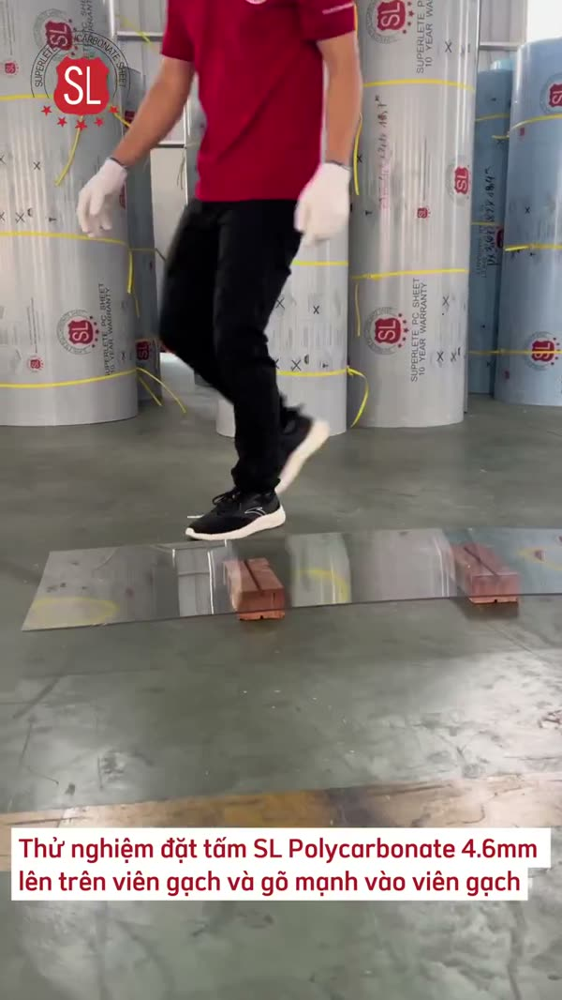
𝐆𝐨̃ 𝐛𝐮́𝐚 𝐤𝐡𝐨̂𝐧𝐠 𝐧𝐮̛́𝐭 𝐭𝐚̂́𝐦 - 𝐓𝐢𝐧 đ𝐮̛𝐨̛̣𝐜 𝐤𝐡𝐨̂𝐧𝐠❓❓ #SLPolycarbonate #tamnhualaysang #tamlopthongminh #tamnhuapolycarbonate ------------------------------------- 𝑻𝒂̂́𝒎 𝒏𝒉𝒖̛̣𝒂 𝒍𝒂̂́𝒚 𝒔𝒂́𝒏𝒈 𝑺𝑳 𝑷𝒐𝒍𝒚𝒄𝒂𝒓𝒃𝒐𝒏…
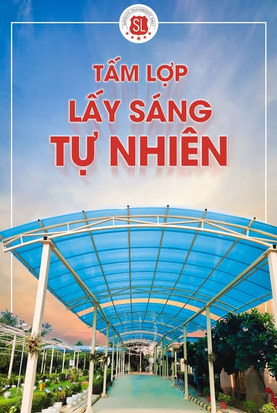
🔥TẤM NHỰA LẤY SÁNG SL - POLYCARBONATE SIÊU BỀN - SIÊU CHỊU LỰC 💥Tấm #nhựa_polycarbonate đang dần thay thế kính lấy sáng lợp mái vì nhiều đặc tính ưu việt, đặc biệt là tính an toàn tuyệt đối khi vỡ, …
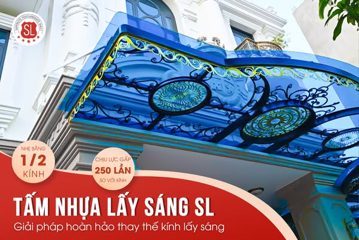
🔥🔥KHÁM PHÁ TẤM LỢP LẤY SÁNG TỰ NHIÊN SL - POLYCARBONATE SIÊU BỀN - 🔥GIẢI PHÁP THAY THẾ MÁI TÔN, KÍNH CÔNG NGHIỆP VƯỢT TRỘI 💥 Bạn đang tìm Vật Liệu lợp mái có đủ Sự chắc chắn của Mái tôn và sự thẩm mỹ…
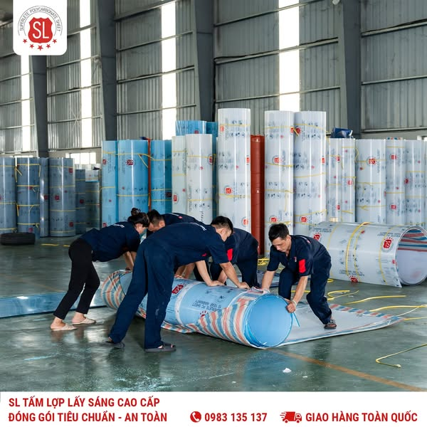
🔥 LÀM MÁI BỀN ĐẸP - CHỌN TẤM TỐT NGAY TỪ ĐẦU Một hệ mái sử dụng nhiều năm cần nhiều hơn một mức giá rẻ. 🔴 SL POLYCARBONATE - TẤM LỢP SẢN XUẤT TRỰC TIẾP TẠI NHÀ MÁY VINASPC 🏭 7 dây chuyền sản xuất hiệ…
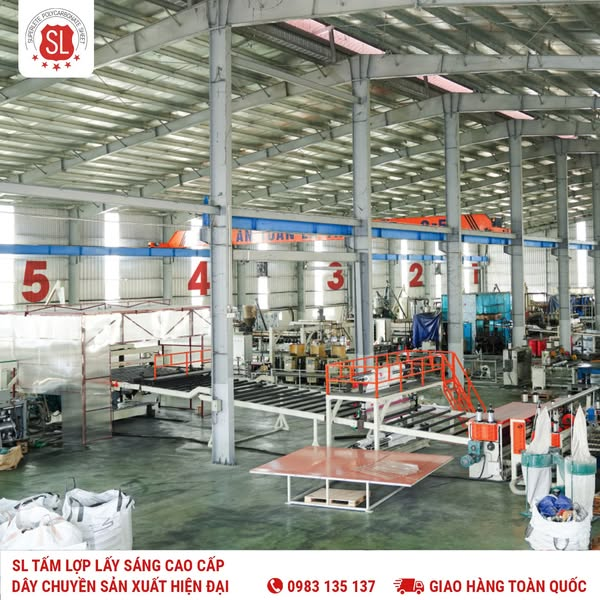
🔥 LỢP MÁI BỀN ĐẸP - LẤY SÁNG TỐT, CHỌN SL POLYCARBONATE Quý khách đang làm mái hiên, sân thượng, nhà xe, giếng trời hay mái che công trình? Đừng chỉ chọn vật liệu theo giá - hãy chọn loại tấm bền, đẹp…
Nhà máy sản xuất nhựa Polycarbonate
Nhà máy sản xuất nhựa Polycarbonate · 42 likeLoại chiến dịch → chủ đề → trang đích
Tầng phễu: Nhận biết 0% · Cân nhắc 0% · Chuyển đổi 100%. % tính trên số QC.
Nhận xét: Nhà máy sản xuất nhựa Polycarbonate chủ yếu chạy Tin nhắn (100% QC), xoáy vào chủ đề Giá / báo giá và dẫn về Messenger. 100% QC là chốt trực tiếp, không có nội dung nuôi dưỡng.
Số mẫu có QC mới theo 7 ngày
Nhận xét: Đang tăng tốc: 2 mẫu mới trong 2 tuần gần nhất, so với 0 mẫu trong 4 tuần trước đó.
Ưu đãi trích từ caption (số QC)
Không thấy con số ưu đãi.
Mẫu đáng học nhất · 2 / 2 mẫu
Xếp theo số ngày chạy × số QC: mẫu chạy càng lâu và được nhân càng nhiều bản thì càng có khả năng đang hiệu quả.
Nhận xét: Mẫu mạnh nhất đã chạy 7 ngày với 4 QC: Nhiều ảnh, chủ đề Giá / báo giá.
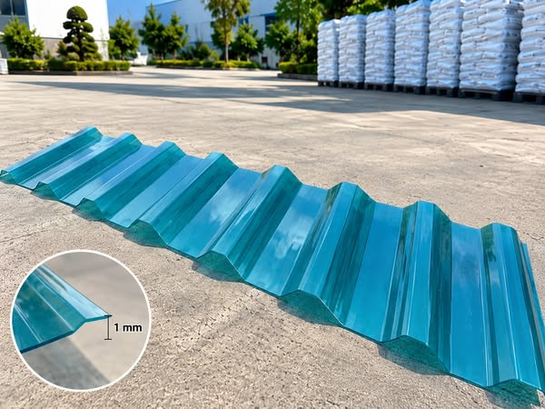
☀️ TẤM SÓNG POLYCARBONATE 1MM – BẢO HÀNH 10 NĂM Giải pháp mái lấy sáng bền đẹp – nhẹ – tiện thi công cho nhà ở và công trình. ✅ Độ dày: 1.0mm ✅ Kích thước: 1.08m × 6m ✅ 100% nguyên liệu nguyên sinh ✅ …
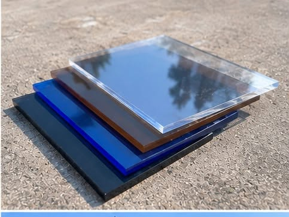
☀️ TẤM NHỰA LẤY SÁNG POLYCARBONATE – GIÁ TRỰC TIẾP TẠI NHÀ MÁY Chuyên sản xuất và cung cấp các dòng tấm Polycarbonate chất lượng cao cho đại lý, nhà thầu và công trình: 🔹 TẤM POLY ĐẶC Trong suốt, ch…
Mái Che Vina
Mái Che Vina · 571 likeLoại chiến dịch → chủ đề → trang đích
Tầng phễu: Nhận biết 0% · Cân nhắc 0% · Chuyển đổi 100%. % tính trên số QC.
Nhận xét: Mái Che Vina chủ yếu chạy Tin nhắn (100% QC), xoáy vào chủ đề Số điện thoại và dẫn về Messenger. 100% QC là chốt trực tiếp, không có nội dung nuôi dưỡng.
Số mẫu có QC mới theo 7 ngày
Nhận xét: Không có mẫu hoàn toàn mới trong 6 tuần, chỉ duy trì mẫu cũ.
Ưu đãi trích từ caption (số QC)
Không thấy con số ưu đãi.
Mẫu đáng học nhất · 5 / 5 mẫu
Xếp theo số ngày chạy × số QC: mẫu chạy càng lâu và được nhân càng nhiều bản thì càng có khả năng đang hiệu quả.
Nhận xét: Mẫu mạnh nhất đã chạy 426 ngày với 2 QC: Nhiều ảnh, chủ đề Số điện thoại.
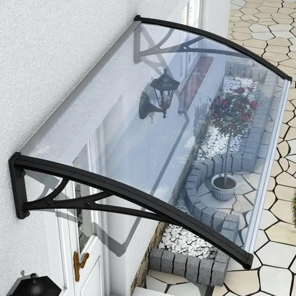
🌟 Mái Che Không Chỉ Là Che – Mà Là Trang Sức Cho Ngôi Nhà Nếu bạn đang tìm một loại mái che vừa đẹp – sang – bền, thì Canofix Hàn Quốc chính là lựa chọn hoàn hảo. ✅ Thương hiệu quốc tế, nhập khẩu ngu…
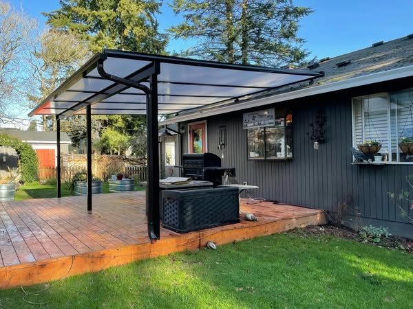
🏗️ GIẢI PHÁP MÁI CHE NGOÀI TRỜI CAO CẤP – VẬT LIỆU CHUẨN CÔNG NGHỆ Bạn đang tìm một mái che sân bền, đẹp, dễ bảo trì? 🔩 Chúng tôi cung cấp mái che sân trước nhà sử dụng: 🔹 Khung nhôm/ thép chống gỉ …
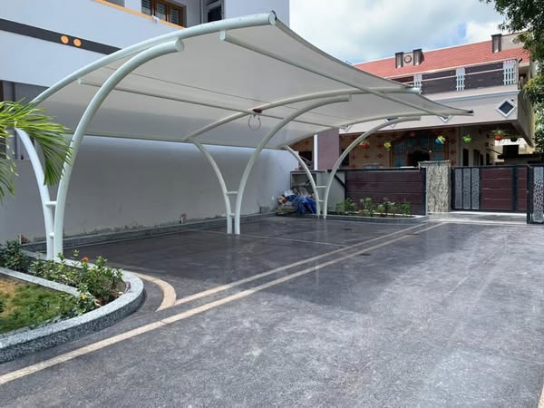
GIẢI PHÁP MÁI CHE CHUYÊN NGHIỆP CHO DOANH NGHIỆP – NHÀ XƯỞNG – TRƯỜNG HỌC! 🛠️ Bạn cần hệ thống mái che đỗ xe bền – đẹp – thi công nhanh cho khuôn viên công ty, nhà máy hay bệnh viện? 👉 Hãy để Mái Ch…
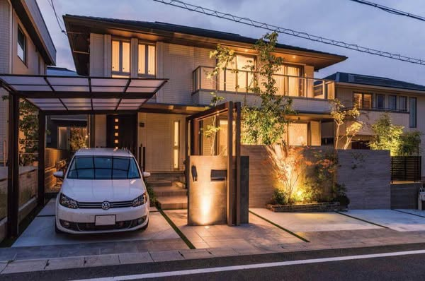
🚘 MÁI CHE Ô TÔ CARPORT MC – GIẢI PHÁP BẢO VỆ XE HƠI TOÀN DIỆN, NÂNG TẦM KHÔNG GIAN SỐNG 🏡 Sở hữu ô tô là niềm tự hào – nhưng đã đủ để bạn yên tâm chưa? 🌞 Nắng gắt, 🌧️ mưa axit, 🌬️ bụi bẩn… đang âm thầ…
🌟 KIẾN TẠO KHÔNG GIAN ĐẲNG CẤP VỚI MÁI CHE BẠT CĂNG KIẾN TRÚC 🌟 ☀️ Nắng gắt làm hỏng trải nghiệm khách hàng tại quán cafe, resort hay khu vui chơi của bạn? 🌧️ Bạn đau đầu tìm kiếm một giải pháp che…
Tấm Nhựa Polycarbonate Giá Thợ Thi Công
Tấm Nhựa Polycarbonate Giá Thợ Thi Công · 253 likeLoại chiến dịch → chủ đề → trang đích
Tầng phễu: Nhận biết 0% · Cân nhắc 0% · Chuyển đổi 100%. % tính trên số QC.
Nhận xét: Tấm Nhựa Polycarbonate Giá Thợ Thi Công chủ yếu chạy Tin nhắn (100% QC), xoáy vào chủ đề Giá / báo giá và dẫn về Messenger. 100% QC là chốt trực tiếp, không có nội dung nuôi dưỡng.
Số mẫu có QC mới theo 7 ngày
Nhận xét: Nhịp ra mẫu đều: 1 mẫu mới trong 2 tuần gần nhất, 0 mẫu trong 4 tuần trước đó.
Ưu đãi trích từ caption (số QC)
Không thấy con số ưu đãi.
Mẫu đáng học nhất · 5 / 5 mẫu
Xếp theo số ngày chạy × số QC: mẫu chạy càng lâu và được nhân càng nhiều bản thì càng có khả năng đang hiệu quả.
Nhận xét: Mẫu mạnh nhất đã chạy 172 ngày với 1 QC: Video, chủ đề Giá / báo giá. 5/5 mẫu đứng đầu là video.
💸 THẦU THỢ LỜI HƠN NHỜ NGUỒN TẤM POLY GIÁ TỐT 💸 Nhiều anh em đang chuyển sang lấy tấm polycarbonate bên em vì: ✅ Giá mềm hơn thị trường ✅ Hàng ổn định ✅ Không thiếu hàng giữa công trình ✅ Có hỗ trợ v…
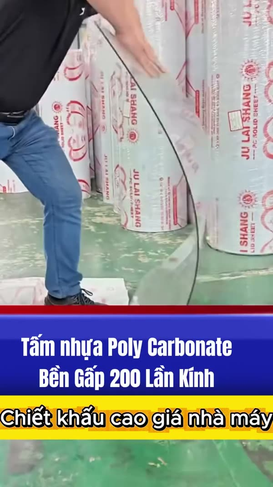
⚡ POLY GIÁ TỐT CHO THẦU THỢ – CÀNG LẤY CÀNG RẺ ⚡ Anh em làm nghề chắc hiểu: 👉 Lời lỗ nằm ở giá vật tư! 💥 Tấm Polycarbonate bên mình: ✔️ Giá cạnh tranh top thị trường ✔️ Có ưu đãi riêng cho thầu, đội…
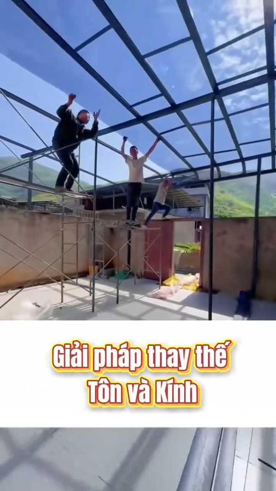
💥 THỢ CẦN GIÁ RẺ – CÓ NGAY POLY GIÁ GỐC 💥 Không cần tìm đâu xa! Tấm Polycarbonate bên mình chuyên phục vụ anh em thi công: 🔧 Làm mái che, nhà xe, giếng trời, bảng hiệu 🔧 Hàng luôn sẵn kho – lấy ngay…
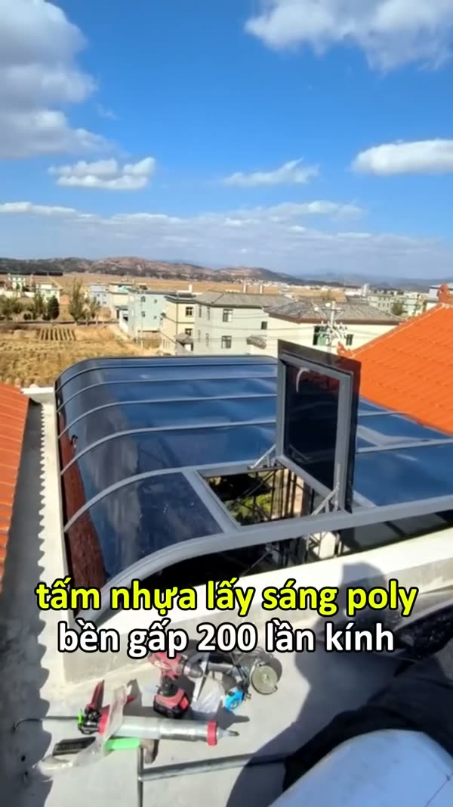
🔥 TẤM NHỰA POLYCARBONATE – GIÁ NHÀ THẦU SIÊU TỐT 🔥 Anh em thầu thợ đang cần vật tư làm mái, làm vách? 👉 Đây là lựa chọn “ngon – bổ – rẻ” không thể bỏ qua! ✔️ Giá xưởng – nhập số lượng càng lớn càng …
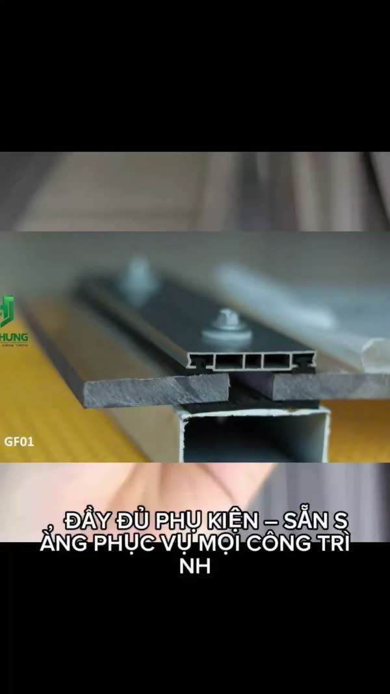
🔥 CHUYÊN PHỤ KIỆN THI CÔNG TẤM NHỰA POLYCARBONATE – GIÁ TỐT CHO ĐẠI LÝ, THẦU THỢ! 🔥 Bạn đang kinh doanh vật liệu xây dựng, làm đại lý phân phối hay chuyên thi công mái che, giếng trời, mái hiên bằng …
Tổng Kho Tấm Nhựa Vinalight
Tổng Kho Tấm Nhựa Vinalight · 1317 likeLoại chiến dịch → chủ đề → trang đích
Tầng phễu: Nhận biết 0% · Cân nhắc 0% · Chuyển đổi 100%. % tính trên số QC.
Nhận xét: Tổng Kho Tấm Nhựa Vinalight chủ yếu chạy Tin nhắn (100% QC), xoáy vào chủ đề Giá / báo giá và dẫn về Messenger. 100% QC là chốt trực tiếp, không có nội dung nuôi dưỡng.
Số mẫu có QC mới theo 7 ngày
Nhận xét: Không có mẫu hoàn toàn mới trong 6 tuần, chỉ duy trì mẫu cũ.
Ưu đãi trích từ caption (số QC)
Không thấy con số ưu đãi.
Mẫu đáng học nhất · 4 / 4 mẫu
Xếp theo số ngày chạy × số QC: mẫu chạy càng lâu và được nhân càng nhiều bản thì càng có khả năng đang hiệu quả.
Nhận xét: Mẫu mạnh nhất đã chạy 49 ngày với 1 QC: Nhiều ảnh, chủ đề Giá / báo giá. 2/4 mẫu đứng đầu là video.
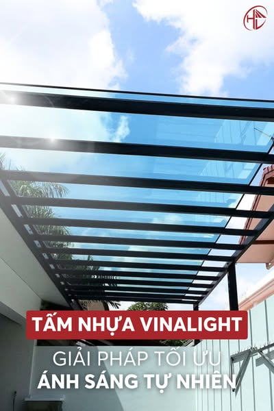
💡 Tấm nhựa Vinalight - Giải pháp tối ưu ánh sáng tự nhiên cho mọi không gian ❓ Bạn yêu thích ánh sáng tự nhiên nhưng lo lắng nắng mưa ghé thăm ngôi nhà của mình? ❓ Bạn đang tìm kiếm giải pháp tận dụn…
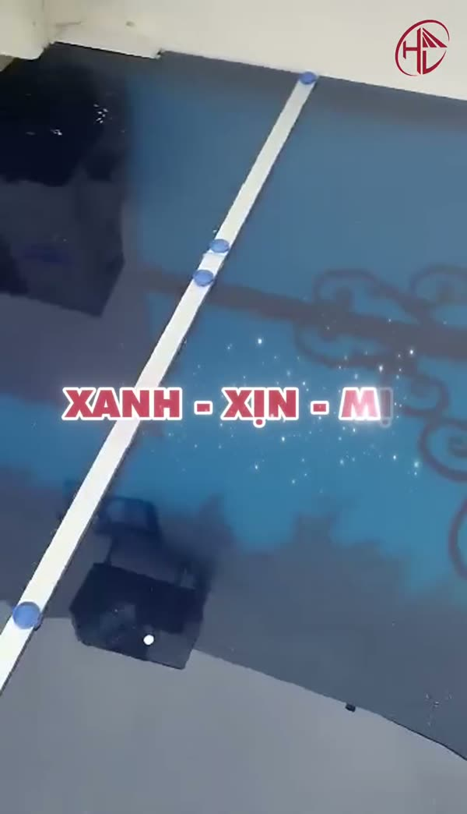
🟦 Tấm nhựa lấy sáng xanh - xịn - mịn thì chỉ có thể là Vinalight ☎️ Hotline: 035.678.6868 - Liên hệ Vinalight để lắp tấm nhựa lấy sáng tân trang cho chính ngôi nhà của bạn #DựÁnHoànThành #HiệuQuảKhôn…
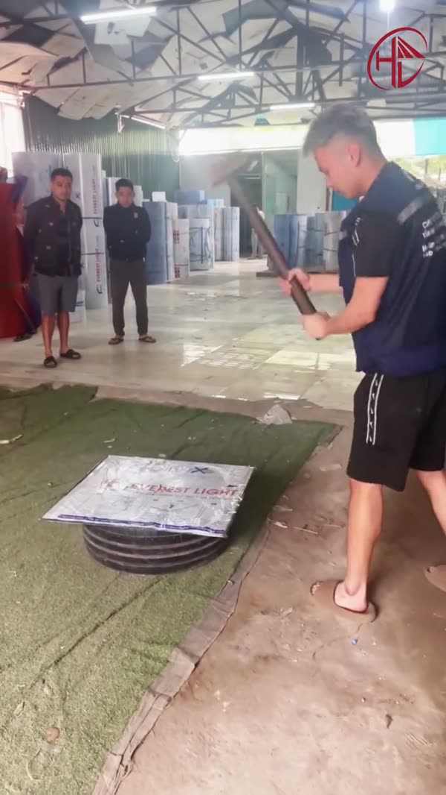
💪 TEST độ chống lực của tấm nhựa lấy sáng tại xưởng Vinalight. ☎️ Hotline: 035.678.6868 - Liên hệ Vinalight để lắp tấm nhựa lấy sáng tân trang cho chính ngôi nhà của bạn #DựÁnHoànThành #HiệuQuảKhôngNg…
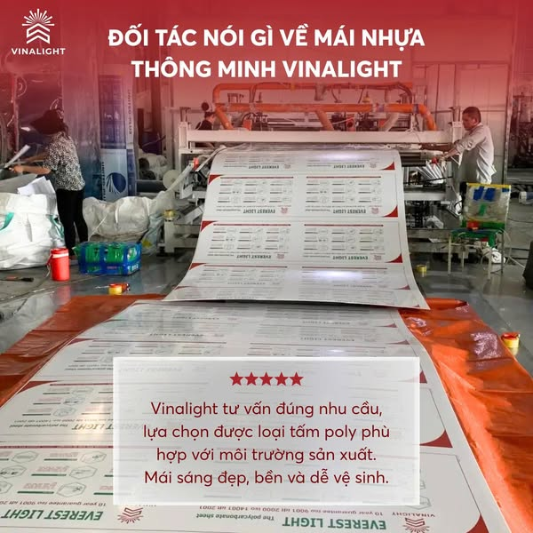
Đối tác nói gì về mái nhựa thông minh Vinalight? 👉 Độ bền – Lấy sáng tốt – Thi công chuẩn. Niềm tin được tạo nên từ chất lượng thực tế. Liên hệ Vinalight để được tư vấn và nhận báo giá nhanh chóng! -…
Nhựa Kính Cường Lực TOP ASIA
Nhựa Kính Cường Lực TOP ASIA · 11502 likeLoại chiến dịch → chủ đề → trang đích
Tầng phễu: Nhận biết 0% · Cân nhắc 0% · Chuyển đổi 100%. % tính trên số QC.
Nhận xét: Nhựa Kính Cường Lực TOP ASIA chủ yếu chạy Tin nhắn (100% QC), xoáy vào chủ đề Số điện thoại và dẫn về Messenger. 100% QC là chốt trực tiếp, không có nội dung nuôi dưỡng.
Số mẫu có QC mới theo 7 ngày
Nhận xét: Đã chững lại: không có mẫu mới trong 2 tuần, trước đó có 1 mẫu.
Ưu đãi trích từ caption (số QC)
Không thấy con số ưu đãi.
Mẫu đáng học nhất · 3 / 3 mẫu
Xếp theo số ngày chạy × số QC: mẫu chạy càng lâu và được nhân càng nhiều bản thì càng có khả năng đang hiệu quả.
Nhận xét: Mẫu mạnh nhất đã chạy 120 ngày với 2 QC: Nhiều ảnh, chủ đề Số điện thoại. 1/3 mẫu đứng đầu là video.
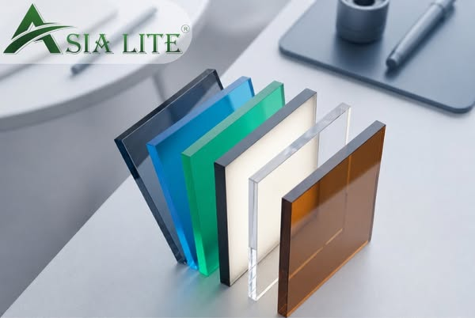
ASIA LITE – TẤM NHỰA KÍNH CƯỜNG LỰC POLYCARBONATE CAO CẤP NHẤT CỦA TOPASIA Nếu bạn đang tìm kiếm một dòng vật liệu lấy sáng vừa bền, vừa ổn định, vừa đáp ứng các tiêu chuẩn khắt khe cho công trình cao…
TOP ASIA — ĐƠN VỊ SẢN XUẤT TẤM NHỰA POLYCARBONATE CƯỜNG LỰC HÀNG ĐẦU VIỆT NAM Nếu bạn đang làm trong ngành xây dựng, thi công hay phân phối vật liệu — cái tên Top Asia là địa chỉ bạn nên biết khi cần …
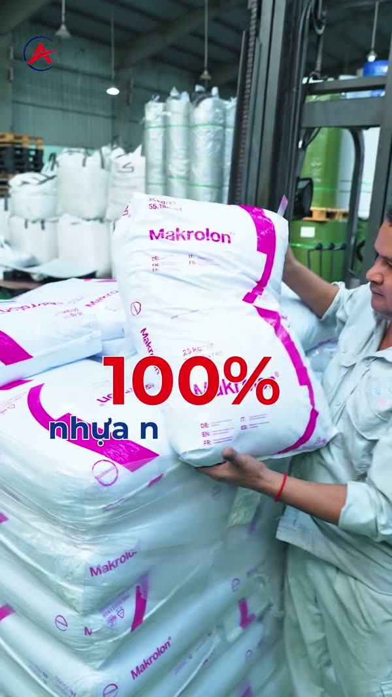
🪟 Chỉ có thể là tấm Polycarbonate đến từ TOP ASIA - nhìn như kính nhưng không phải kính. 🌐 Website: https://topasia.vn 📞KD Miền Bắc: 0934 657 227/ 0896 699 996 / 0934468778 📞KD Miền Nam: 0879 033 999…
Green Roofing Vietnam
Green Roofing Vietnam · 5059 likeLoại chiến dịch → chủ đề → trang đích
Tầng phễu: Nhận biết 0% · Cân nhắc 0% · Chuyển đổi 100%. % tính trên số QC.
Nhận xét: Green Roofing Vietnam chủ yếu chạy Tin nhắn (100% QC), xoáy vào chủ đề Giá / báo giá và dẫn về Messenger. 100% QC là chốt trực tiếp, không có nội dung nuôi dưỡng.
Số mẫu có QC mới theo 7 ngày
Nhận xét: Không có mẫu hoàn toàn mới trong 6 tuần, chỉ duy trì mẫu cũ.
Ưu đãi trích từ caption (số QC)
Không thấy con số ưu đãi.
Mẫu đáng học nhất · 4 / 4 mẫu
Xếp theo số ngày chạy × số QC: mẫu chạy càng lâu và được nhân càng nhiều bản thì càng có khả năng đang hiệu quả.
Nhận xét: Mẫu mạnh nhất đã chạy 160 ngày với 1 QC: Video, chủ đề Giá / báo giá. 4/4 mẫu đứng đầu là video.
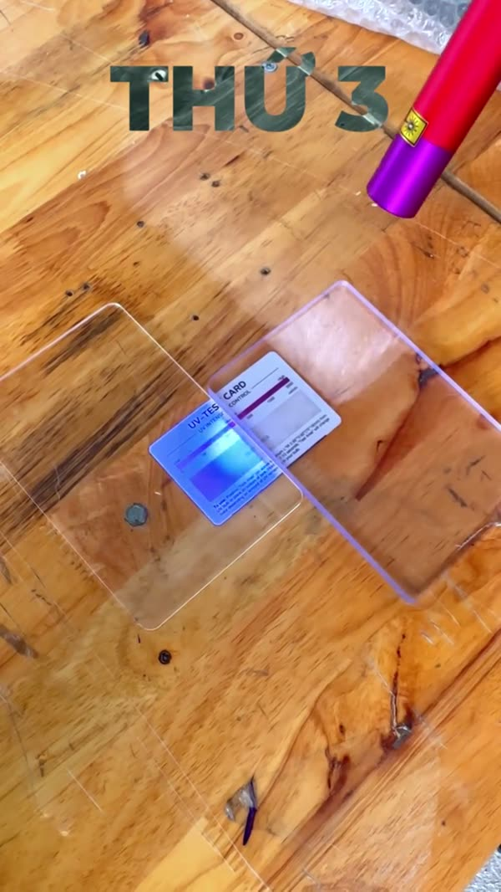
[ BÁO GIÁ] MÁI POLY CHO GIA CHỦ THÍCH KỸ CÀNG, AN TOÀN VÀ CHẤT LƯỢNG --------------------------------------------------------------------- GREEN ROOFING - Chọn Xanh, Chọn Bền Vững. 📞 Hotline: 0932 06…
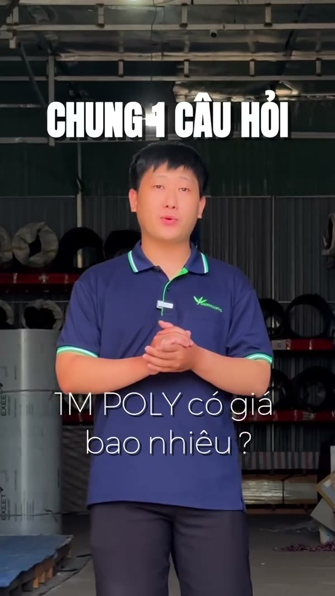
95% KHÁCH HÀNG LÀM MÁI POLYCARBONATE ĐỀU MẮC PHẢI SAI LẦM NÀY 👇 Câu hỏi quen thuộc nhất mà Green Roofing nhận được mỗi ngày là: "1 mét Poly giá bao nhiêu?". Nhưng sự thật là, vật liệu tốt nhất không …
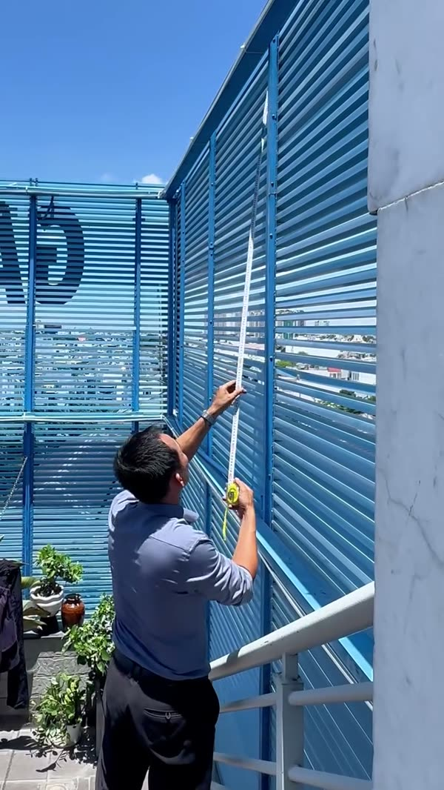
CHỌN ĐƠN VỊ THI CÔNG POLY, ĐỪNG CHỈ NHÌN VÀO GIÁ Một báo giá rẻ chưa chắc giúp bạn tiết kiệm. Nếu vật liệu không rõ nguồn gốc, thi công thiếu kỹ thuật hoặc phát sinh nhiều chi phí, công trình có thể…
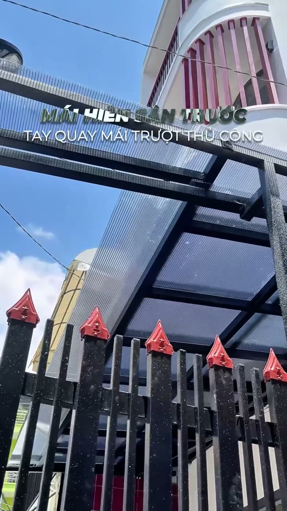
NẮNG MƯA THẤT THƯỜNG, ĐỪNG ĐỂ KHOẢNG SÂN NHÀ BẠN BỊ BỎ PHÍ! 🏠 Muốn làm mái che nhưng sợ bí, tối nhà, nóng hoặc làm xong không hợp kiến trúc? Green Roofing cung cấp giải pháp mái che Polycarbonate tr…
Tấm Nhựa Thông Minh VinaHome
Tấm Nhựa Thông Minh VinaHome · 9099 likeLoại chiến dịch → chủ đề → trang đích
Tầng phễu: Nhận biết 0% · Cân nhắc 0% · Chuyển đổi 100%. % tính trên số QC.
Nhận xét: Tấm Nhựa Thông Minh VinaHome chủ yếu chạy Tin nhắn (100% QC), xoáy vào chủ đề Giá / báo giá và dẫn về Messenger. 100% QC là chốt trực tiếp, không có nội dung nuôi dưỡng.
Số mẫu có QC mới theo 7 ngày
Nhận xét: Không có mẫu hoàn toàn mới trong 6 tuần, chỉ duy trì mẫu cũ.
Ưu đãi trích từ caption (số QC)
Không thấy con số ưu đãi.
Mẫu đáng học nhất · 1 / 1 mẫu
Xếp theo số ngày chạy × số QC: mẫu chạy càng lâu và được nhân càng nhiều bản thì càng có khả năng đang hiệu quả.
Nhận xét: Mẫu mạnh nhất đã chạy 110 ngày với 3 QC: Video, chủ đề Giá / báo giá. 1/1 mẫu đứng đầu là video.
Nhà Máy Tấm Nhựa Polycarbonate Kiên An
Nhà Máy Tấm Nhựa Polycarbonate Kiên An · 4578 likeLoại chiến dịch → chủ đề → trang đích
Tầng phễu: Nhận biết 0% · Cân nhắc 0% · Chuyển đổi 100%. % tính trên số QC.
Nhận xét: Nhà Máy Tấm Nhựa Polycarbonate Kiên An chủ yếu chạy Tin nhắn (100% QC), xoáy vào chủ đề Giao hàng toàn quốc và dẫn về Messenger. 100% QC là chốt trực tiếp, không có nội dung nuôi dưỡng.
Số mẫu có QC mới theo 7 ngày
Nhận xét: Không có mẫu hoàn toàn mới trong 6 tuần, chỉ duy trì mẫu cũ.
Ưu đãi trích từ caption (số QC)
Không thấy con số ưu đãi.
Mẫu đáng học nhất · 2 / 2 mẫu
Xếp theo số ngày chạy × số QC: mẫu chạy càng lâu và được nhân càng nhiều bản thì càng có khả năng đang hiệu quả.
Nhận xét: Mẫu mạnh nhất đã chạy 124 ngày với 2 QC: Video, chủ đề Giao hàng toàn quốc. 2/2 mẫu đứng đầu là video.
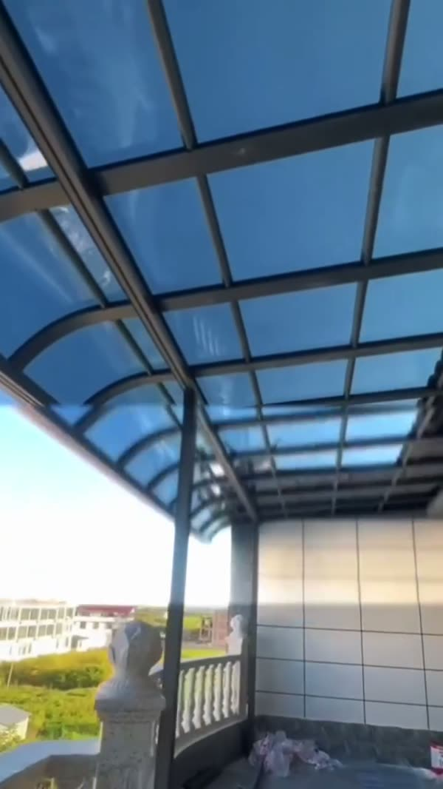
✨ THỬ ĐẬP TRỰC TIẾP – MỚI THẤY ĐỘ BỀN CỦA TẤM POLYCARBONATE Nói về độ bền thì nhiều người vẫn khó hình dung. Nhưng chỉ cần xem thử trực tiếp là thấy khác biệt. 🔹 Chịu lực tốt khi va đập 🔹 Hạn chế nứ…
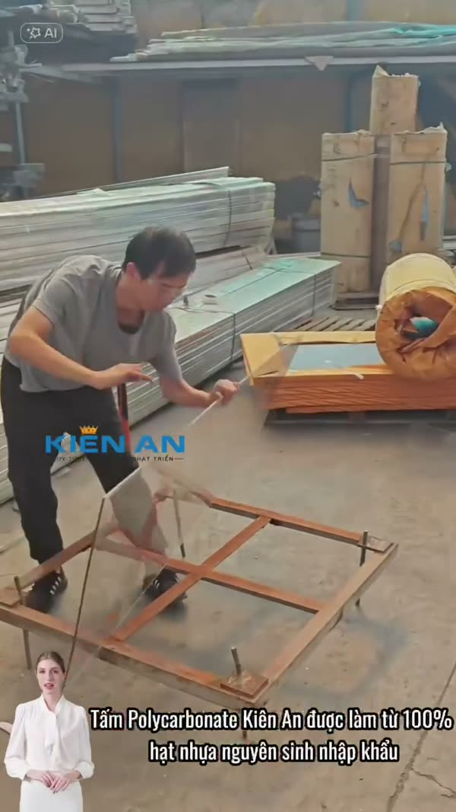
VÌ SAO HIỆN TẠI NHÀ NHÀ ĐỀU LẮP MÁI NHỰA? Nhìn mỏng vậy thôi, nhưng tấm nhựa Polycarbonate Kiên An chịu lực gấp 250 lần kính thường! Thử nghiệm thực tế: đập búa, thả vật nặng, thậm chí đứng lên trực t…
Tấm nhựa Polycarbonate Đại Việt
Tấm nhựa Polycarbonate Đại Việt · 2437 likeLoại chiến dịch → chủ đề → trang đích
Tầng phễu: Nhận biết 0% · Cân nhắc 0% · Chuyển đổi 100%. % tính trên số QC.
Nhận xét: Tấm nhựa Polycarbonate Đại Việt chủ yếu chạy Tin nhắn (100% QC), xoáy vào chủ đề Chất lượng / chống UV và dẫn về Messenger. 100% QC là chốt trực tiếp, không có nội dung nuôi dưỡng.
Số mẫu có QC mới theo 7 ngày
Nhận xét: Không có mẫu hoàn toàn mới trong 6 tuần, chỉ duy trì mẫu cũ.
Ưu đãi trích từ caption (số QC)
Không thấy con số ưu đãi.
Mẫu đáng học nhất · 2 / 2 mẫu
Xếp theo số ngày chạy × số QC: mẫu chạy càng lâu và được nhân càng nhiều bản thì càng có khả năng đang hiệu quả.
Nhận xét: Mẫu mạnh nhất đã chạy 149 ngày với 2 QC: Video, chủ đề Chất lượng / chống UV. 1/2 mẫu đứng đầu là video.
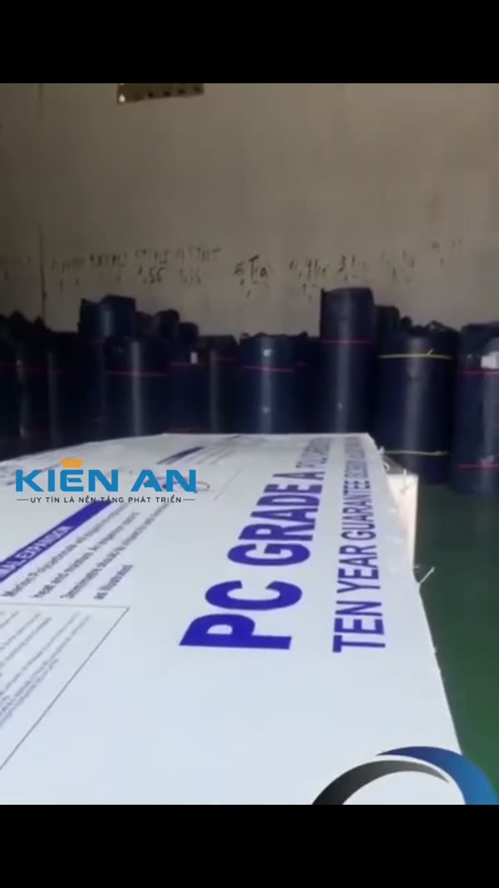
BÚA TẠ GÕ CŨNG KHÔNG XI NHÊ! 🔨💪 Bạn có tin không? Tấm nhựa lấy sáng Polycarbonate của Kiên An – dù mỏng nhẹ – nhưng sức bền thì “không phải dạng vừa”! 🔨 Gõ bằng búa tạ cũng không nứt, không vỡ, không …
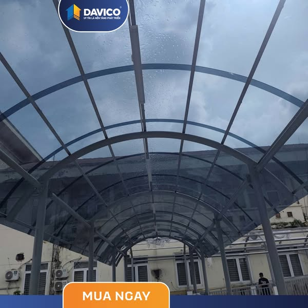
THÊM MỘT DẤU ẤN CỦA KIÊN AN TẠI HÀ ĐÔNG! Tấm nhựa Polycarbonate Kiên An tiếp tục được đưa vào thi công hạng mục cầu vượt tại Bệnh viện Đa khoa Hà Đông. Từ khâu chuẩn bị hàng, kiểm tra quy cách đến v…
Tấm Poly Lấy Sáng Krystal
Tấm Poly Lấy Sáng Krystal · 1614 likeLoại chiến dịch → chủ đề → trang đích
Tầng phễu: Nhận biết 0% · Cân nhắc 0% · Chuyển đổi 100%. % tính trên số QC.
Nhận xét: Tấm Poly Lấy Sáng Krystal chủ yếu chạy Tin nhắn (100% QC), xoáy vào chủ đề Giá / báo giá và dẫn về Messenger. 100% QC là chốt trực tiếp, không có nội dung nuôi dưỡng.
Số mẫu có QC mới theo 7 ngày
Nhận xét: Đã chững lại: không có mẫu mới trong 2 tuần, trước đó có 1 mẫu.
Ưu đãi trích từ caption (số QC)
Không thấy con số ưu đãi.
Mẫu đáng học nhất · 1 / 1 mẫu
Xếp theo số ngày chạy × số QC: mẫu chạy càng lâu và được nhân càng nhiều bản thì càng có khả năng đang hiệu quả.
Nhận xét: Mẫu mạnh nhất đã chạy 25 ngày với 3 QC: Nhiều ảnh, chủ đề Giá / báo giá.
Nhà Máy Nhựa Lấy Sáng Poly
Nhà Máy Nhựa Lấy Sáng Poly · 33488 likeLoại chiến dịch → chủ đề → trang đích
Tầng phễu: Nhận biết 0% · Cân nhắc 0% · Chuyển đổi 100%. % tính trên số QC.
Nhận xét: Nhà Máy Nhựa Lấy Sáng Poly chủ yếu chạy Tin nhắn (100% QC), xoáy vào chủ đề Giá / báo giá và dẫn về Messenger. 100% QC là chốt trực tiếp, không có nội dung nuôi dưỡng.
Số mẫu có QC mới theo 7 ngày
Nhận xét: Đang tăng tốc: 2 mẫu mới trong 2 tuần gần nhất, so với 0 mẫu trong 4 tuần trước đó.
Ưu đãi trích từ caption (số QC)
Không thấy con số ưu đãi.
Mẫu đáng học nhất · 2 / 2 mẫu
Xếp theo số ngày chạy × số QC: mẫu chạy càng lâu và được nhân càng nhiều bản thì càng có khả năng đang hiệu quả.
Nhận xét: Mẫu mạnh nhất đã chạy 1 ngày với 2 QC: Video, chủ đề Giá / báo giá. 2/2 mẫu đứng đầu là video.
🔥 KHÔNG CẦN LO MÁI DỄ VỠ, NẶNG NỀ! 🔥 ✅ Nhẹ bằng nửa kính → lắp nhanh, giảm chi phí khung đỡ ✅ Bền gấp 200 lần kính, chịu mưa đá, gió bão lớn ✅ Lấy sáng tự nhiên dịu mắt, chặn tia UV gây hại ✅ Bền màu …
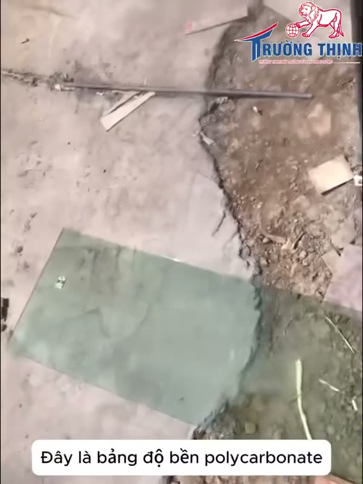
🔎 TẠI SAO NHIỀU NHÀ THẦU ƯU TIÊN CHỌN TẤM POLYCARBONATE? ❓ ▪️ Trọng lượng chỉ bằng 1/2 kính → giảm tải khung xương, tiết kiệm chi phí vận chuyển & thi công ▪️ Chịu va đập gấp 200 lần kính, không tạo m…
Hải Nam - Chuyên Tấm Lợp Poly Lấy Sáng
Hải Nam - Chuyên Tấm Lợp Poly Lấy Sáng · 1322 likeLoại chiến dịch → chủ đề → trang đích
Tầng phễu: Nhận biết 0% · Cân nhắc 0% · Chuyển đổi 100%. % tính trên số QC.
Nhận xét: Hải Nam - Chuyên Tấm Lợp Poly Lấy Sáng chủ yếu chạy Tin nhắn (100% QC), xoáy vào chủ đề Giá / báo giá và dẫn về Messenger. 100% QC là chốt trực tiếp, không có nội dung nuôi dưỡng.
Số mẫu có QC mới theo 7 ngày
Nhận xét: Đang tăng tốc: 2 mẫu mới trong 2 tuần gần nhất, so với 0 mẫu trong 4 tuần trước đó.
Ưu đãi trích từ caption (số QC)
Không thấy con số ưu đãi.
Mẫu đáng học nhất · 2 / 2 mẫu
Xếp theo số ngày chạy × số QC: mẫu chạy càng lâu và được nhân càng nhiều bản thì càng có khả năng đang hiệu quả.
Nhận xét: Mẫu mạnh nhất đã chạy 1 ngày với 1 QC: Video, chủ đề Giá / báo giá. 2/2 mẫu đứng đầu là video.
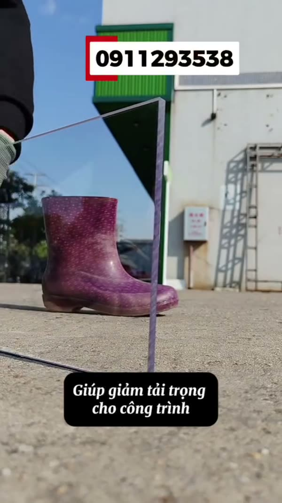
☀️ TẤM POLY LẤY SÁNG BỀN ĐẸP CHO MỌI CÔNG TRÌNH ✔️ Nhẹ, bền, chịu va đập tốt ✔️ Lấy sáng tự nhiên, ứng dụng đa dạng ✔️ Nhận cắt theo kích thước yêu cầu 📩 Inbox ngay để được tư vấn và báo giá ! 📞 Hotli…
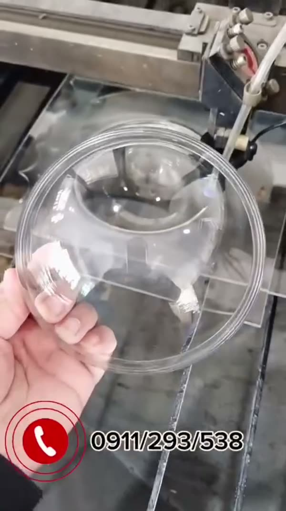
Hải Nam nhận gia công, thi công mica theo yêu cầu, đảm bảo tính thẩm mỹ và phù hợp với nhu cầu sử dụng. 📞 Hotline: 0911293538 📩 Email: knhdoanh3@gmail.com #HaiNam #Mica #GiaCongMica #ThiCongMica #TamM…
Nhà Máy Nhựa Lấy Sáng VIỆT NAM
Nhà Máy Nhựa Lấy Sáng VIỆT NAM · 15903 likeLoại chiến dịch → chủ đề → trang đích
Tầng phễu: Nhận biết 0% · Cân nhắc 0% · Chuyển đổi 100%. % tính trên số QC.
Nhận xét: Nhà Máy Nhựa Lấy Sáng VIỆT NAM chủ yếu chạy Tin nhắn (100% QC), xoáy vào chủ đề Tổng kho / xưởng và dẫn về Messenger. 100% QC là chốt trực tiếp, không có nội dung nuôi dưỡng.
Số mẫu có QC mới theo 7 ngày
Nhận xét: Nhịp ra mẫu đều: 1 mẫu mới trong 2 tuần gần nhất, 0 mẫu trong 4 tuần trước đó.
Ưu đãi trích từ caption (số QC)
Không thấy con số ưu đãi.
Mẫu đáng học nhất · 2 / 2 mẫu
Xếp theo số ngày chạy × số QC: mẫu chạy càng lâu và được nhân càng nhiều bản thì càng có khả năng đang hiệu quả.
Nhận xét: Mẫu mạnh nhất đã chạy 105 ngày với 1 QC: Video, chủ đề Tổng kho / xưởng. 2/2 mẫu đứng đầu là video.
🔥 Tạm biệt kính dễ vỡ, mái tôn nóng bức! Polycarbonate – xu hướng vật liệu mới năm 2025. 👉 Siêu bền – Cách nhiệt – Lấy sáng tự nhiên – Bền vững cho tương lai 👉Ứng dụng linh hoạt cho mái che nhà xưởng,…
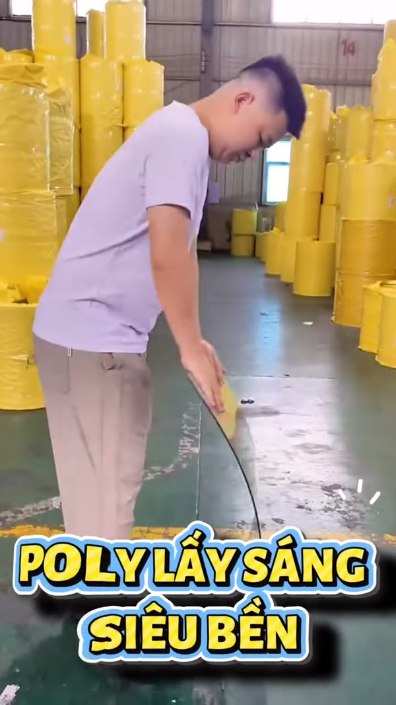
🏗️ TẤM POLY LẤY SÁNG – GIẢI PHÁP MÁI CHE HIỆN ĐẠI CHO MỌI CÔNG TRÌNH ☀️ Muốn tận dụng ánh sáng tự nhiên mà vẫn đảm bảo độ bền và tính thẩm mỹ? Tấm nhựa Polycarbonate là vật liệu đáng cân nhắc cho nhiề…
Nhà Máy Nhựa Lấy Sáng Vinahome
Nhà Máy Nhựa Lấy Sáng Vinahome · 15862 likeLoại chiến dịch → chủ đề → trang đích
Tầng phễu: Nhận biết 0% · Cân nhắc 0% · Chuyển đổi 100%. % tính trên số QC.
Nhận xét: Nhà Máy Nhựa Lấy Sáng Vinahome chủ yếu chạy Tin nhắn (100% QC), xoáy vào chủ đề Giá / báo giá và dẫn về Messenger. 100% QC là chốt trực tiếp, không có nội dung nuôi dưỡng.
Số mẫu có QC mới theo 7 ngày
Nhận xét: Đang tăng tốc: 2 mẫu mới trong 2 tuần gần nhất, so với 0 mẫu trong 4 tuần trước đó.
Ưu đãi trích từ caption (số QC)
Không thấy con số ưu đãi.
Mẫu đáng học nhất · 2 / 2 mẫu
Xếp theo số ngày chạy × số QC: mẫu chạy càng lâu và được nhân càng nhiều bản thì càng có khả năng đang hiệu quả.
Nhận xét: Mẫu mạnh nhất đã chạy 10 ngày với 1 QC: Video, chủ đề Giá / báo giá. 2/2 mẫu đứng đầu là video.

TẤM LỢP NHỰA LẤY SÁNG VINAHOME - CHẤT LƯỢNG - SANG TRỌNG - BỀN ĐẸP! ----------- 💥 Giá trực tiếp từ nhà máy cho các công trình gia đình dân dụng. 👉 Chiết khấu cao cho chủ thầu & thợ thi công công trình…
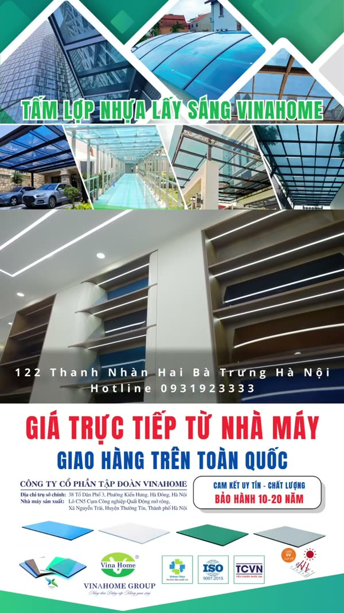
TẤM LỢP NHỰA LẤY SÁNG VINAHOME - GIÁ TRỰC TIẾP TỪ NHÀ MÁY ✨ Cam kết uy tín - chất lượng, bảo hành 10–20 năm. 💥 Giá trực tiếp từ nhà máy cho các công trình gia đình dân dụng. 👉 Chiết khấu cao cho chủ t…
Tập Đoàn Nhựa Lấy Sáng Việt Nam
Tập Đoàn Nhựa Lấy Sáng Việt Nam · 7513 likeLoại chiến dịch → chủ đề → trang đích
Tầng phễu: Nhận biết 0% · Cân nhắc 0% · Chuyển đổi 100%. % tính trên số QC.
Nhận xét: Tập Đoàn Nhựa Lấy Sáng Việt Nam chủ yếu chạy Tin nhắn (100% QC), xoáy vào chủ đề Giá / báo giá và dẫn về Messenger. 100% QC là chốt trực tiếp, không có nội dung nuôi dưỡng.
Số mẫu có QC mới theo 7 ngày
Nhận xét: Không có mẫu hoàn toàn mới trong 6 tuần, chỉ duy trì mẫu cũ.
Ưu đãi trích từ caption (số QC)
Không thấy con số ưu đãi.
Mẫu đáng học nhất · 1 / 1 mẫu
Xếp theo số ngày chạy × số QC: mẫu chạy càng lâu và được nhân càng nhiều bản thì càng có khả năng đang hiệu quả.
Nhận xét: Mẫu mạnh nhất đã chạy 116 ngày với 2 QC: Video, chủ đề Giá / báo giá. 1/1 mẫu đứng đầu là video.
Tổng kho tấm nhựa Polycarbonate Ngọc Bích
Tổng kho tấm nhựa Polycarbonate Ngọc Bích · 27 likeLoại chiến dịch → chủ đề → trang đích
Tầng phễu: Nhận biết 0% · Cân nhắc 0% · Chuyển đổi 100%. % tính trên số QC.
Nhận xét: Tổng kho tấm nhựa Polycarbonate Ngọc Bích chủ yếu chạy Tin nhắn (100% QC), xoáy vào chủ đề Giá / báo giá và dẫn về Messenger. 100% QC là chốt trực tiếp, không có nội dung nuôi dưỡng.
Số mẫu có QC mới theo 7 ngày
Nhận xét: Không có mẫu hoàn toàn mới trong 6 tuần, chỉ duy trì mẫu cũ.
Ưu đãi trích từ caption (số QC)
Không thấy con số ưu đãi.
Mẫu đáng học nhất · 2 / 2 mẫu
Xếp theo số ngày chạy × số QC: mẫu chạy càng lâu và được nhân càng nhiều bản thì càng có khả năng đang hiệu quả.
Nhận xét: Mẫu mạnh nhất đã chạy 76 ngày với 1 QC: Video, chủ đề Giá / báo giá. 2/2 mẫu đứng đầu là video.
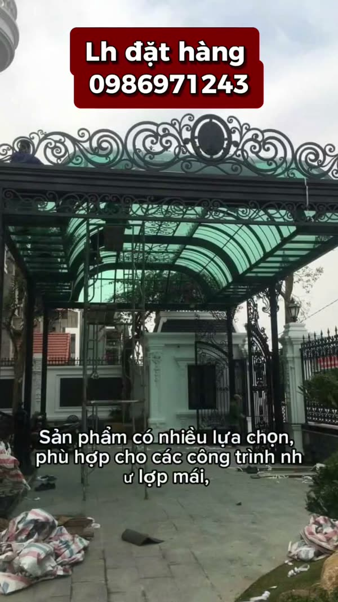
💥 NHẬP POLYCARBONATE GIÁ TỐT – GIAO HÀNG NHANH! Dành cho đội thợ, nhà thầu, đại lý đang cần nguồn tấm Polycarbonate chất lượng cao nguồn hàng ổn định. 📌 Giá cạnh tranh – hỗ trợ tốt cho đơn số lượng …
🚨 THẦU THỢ, ĐẠI LÝ ĐANG TÌM MỐI POLYCARBONATE? 🔥 Giá tốt, cạnh tranh 🚚 Giao hàng toàn quốc ✂️ Cắt theo kích thước yêu cầu 🛠️ Hỗ trợ kỹ thuật thi công 📦 Nhận đơn cho thầu thợ & đại lý nhập hàng 📞 Hotli…
Mái Nhôm Nhựa Cường Lực - Việt Poly
Mái Nhôm Nhựa Cường Lực - Việt Poly · 4 likeLoại chiến dịch → chủ đề → trang đích
Tầng phễu: Nhận biết 0% · Cân nhắc 0% · Chuyển đổi 100%. % tính trên số QC.
Nhận xét: Mái Nhôm Nhựa Cường Lực - Việt Poly chủ yếu chạy Tin nhắn (100% QC), xoáy vào chủ đề Giá / báo giá và dẫn về Messenger. 100% QC là chốt trực tiếp, không có nội dung nuôi dưỡng.
Số mẫu có QC mới theo 7 ngày
Nhận xét: Đang tăng tốc: 2 mẫu mới trong 2 tuần gần nhất, so với 0 mẫu trong 4 tuần trước đó.
Ưu đãi trích từ caption (số QC)
Không thấy con số ưu đãi.
Mẫu đáng học nhất · 2 / 2 mẫu
Xếp theo số ngày chạy × số QC: mẫu chạy càng lâu và được nhân càng nhiều bản thì càng có khả năng đang hiệu quả.
Nhận xét: Mẫu mạnh nhất đã chạy 5 ngày với 1 QC: Video, chủ đề Giá / báo giá. 2/2 mẫu đứng đầu là video.
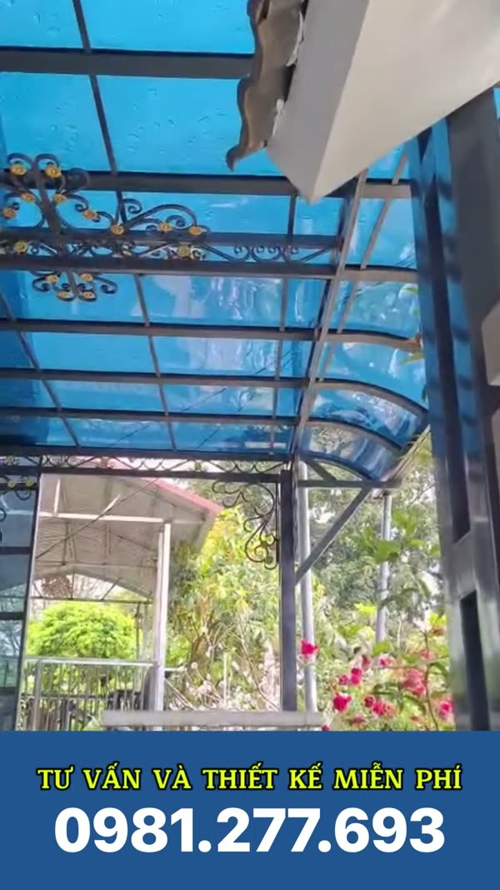
Còn hơn 3 tháng nữa là Tết, sân thượng nhà bạn đã sẵn sàng chưa? 🏡✨ Một mái che polycarbonate khung nhôm biến khoảng sân bỏ trống thành góc uống trà, phơi đồ, vui chơi cho cả nhà, vừa sáng vừa mát, m…
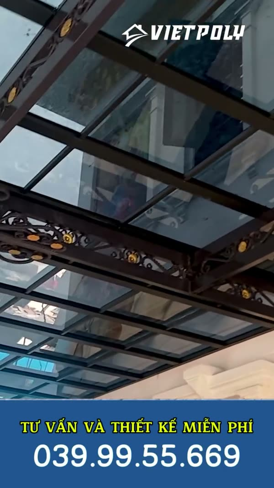
Ban công nóng hầm hập, mưa thì dột, gió thì ồn? Mái polycarbonate Vietpoly xử lý cả 3 chỉ trong 1 lần thi công. ☀️🌧️ Vì sao ngày càng nhiều gia đình chọn tấm lợp polycarbonate? ✅ Có lớp chống tia UV,…
Nhựa Cường Lực Lấy Sáng
Nhựa Cường Lực Lấy Sáng · 3791 likeLoại chiến dịch → chủ đề → trang đích
Tầng phễu: Nhận biết 0% · Cân nhắc 0% · Chuyển đổi 100%. % tính trên số QC.
Nhận xét: Nhựa Cường Lực Lấy Sáng chủ yếu chạy Tin nhắn (100% QC), xoáy vào chủ đề Số điện thoại và dẫn về Messenger. 100% QC là chốt trực tiếp, không có nội dung nuôi dưỡng.
Số mẫu có QC mới theo 7 ngày
Nhận xét: Nhịp ra mẫu đều: 1 mẫu mới trong 2 tuần gần nhất, 0 mẫu trong 4 tuần trước đó.
Ưu đãi trích từ caption (số QC)
Không thấy con số ưu đãi.
Mẫu đáng học nhất · 2 / 2 mẫu
Xếp theo số ngày chạy × số QC: mẫu chạy càng lâu và được nhân càng nhiều bản thì càng có khả năng đang hiệu quả.
Nhận xét: Mẫu mạnh nhất đã chạy 115 ngày với 1 QC: Video, chủ đề Số điện thoại. 2/2 mẫu đứng đầu là video.
✨ Bạn đang cần một loại mái che vừa mát, vừa lấy sáng tự nhiên? 💡 Tấm nhựa Polycarbonate là lựa chọn hoàn hảo cho mái hiên, nhà xe, giếng trời, sân vườn và nhiều công trình hiện đại ✅ Lấy sáng tự nhiê…
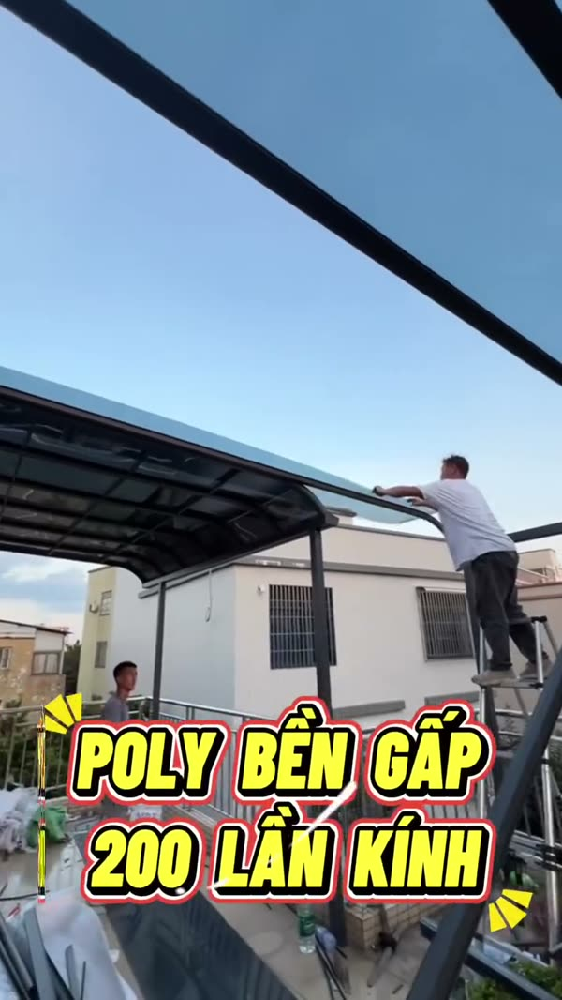
🏡 TẤM POLYCARBONATE – LỰA CHỌN TỐI ƯU CHO MÁI CHE LẤY SÁNG 🌤️ Vừa cần ánh sáng tự nhiên, vừa đề cao độ bền và tính thẩm mỹ cho công trình? Tấm Polycarbonate là giải pháp được nhiều chủ đầu tư và nhà t…
Mái mỹ thuât việtpoly
Mái mỹ thuât việtpoly · 5629 likeLoại chiến dịch → chủ đề → trang đích
Tầng phễu: Nhận biết 0% · Cân nhắc 0% · Chuyển đổi 100%. % tính trên số QC.
Nhận xét: Mái mỹ thuât việtpoly chủ yếu chạy Tin nhắn (100% QC), xoáy vào chủ đề Giá / báo giá và dẫn về Messenger. 100% QC là chốt trực tiếp, không có nội dung nuôi dưỡng.
Số mẫu có QC mới theo 7 ngày
Nhận xét: Nhịp ra mẫu đều: 1 mẫu mới trong 2 tuần gần nhất, 0 mẫu trong 4 tuần trước đó.
Ưu đãi trích từ caption (số QC)
Không thấy con số ưu đãi.
Mẫu đáng học nhất · 1 / 1 mẫu
Xếp theo số ngày chạy × số QC: mẫu chạy càng lâu và được nhân càng nhiều bản thì càng có khả năng đang hiệu quả.
Nhận xét: Mẫu mạnh nhất đã chạy 2 ngày với 1 QC: Video, chủ đề Giá / báo giá. 1/1 mẫu đứng đầu là video.
Tấm Nhựa Lấy Sáng
Tấm Nhựa Lấy Sáng · 105693 likeLoại chiến dịch → chủ đề → trang đích
Tầng phễu: Nhận biết 0% · Cân nhắc 0% · Chuyển đổi 100%. % tính trên số QC.
Nhận xét: Tấm Nhựa Lấy Sáng chủ yếu chạy Tin nhắn (100% QC), xoáy vào chủ đề Khác và dẫn về Messenger. 100% QC là chốt trực tiếp, không có nội dung nuôi dưỡng.
Số mẫu có QC mới theo 7 ngày
Nhận xét: Không có mẫu hoàn toàn mới trong 6 tuần, chỉ duy trì mẫu cũ.
Ưu đãi trích từ caption (số QC)
Không thấy con số ưu đãi.
Mẫu đáng học nhất · 1 / 1 mẫu
Xếp theo số ngày chạy × số QC: mẫu chạy càng lâu và được nhân càng nhiều bản thì càng có khả năng đang hiệu quả.
Nhận xét: Mẫu mạnh nhất đã chạy 126 ngày với 1 QC: Video, chủ đề Khác. 1/1 mẫu đứng đầu là video.
Nhựa Lấy Sáng VinaHome
Nhựa Lấy Sáng VinaHome · 37215 likeLoại chiến dịch → chủ đề → trang đích
Tầng phễu: Nhận biết 0% · Cân nhắc 0% · Chuyển đổi 100%. % tính trên số QC.
Nhận xét: Nhựa Lấy Sáng VinaHome chủ yếu chạy Tin nhắn (100% QC), xoáy vào chủ đề Giá / báo giá và dẫn về Messenger. 100% QC là chốt trực tiếp, không có nội dung nuôi dưỡng.
Số mẫu có QC mới theo 7 ngày
Nhận xét: Không có mẫu hoàn toàn mới trong 6 tuần, chỉ duy trì mẫu cũ.
Ưu đãi trích từ caption (số QC)
Không thấy con số ưu đãi.
Mẫu đáng học nhất · 1 / 1 mẫu
Xếp theo số ngày chạy × số QC: mẫu chạy càng lâu và được nhân càng nhiều bản thì càng có khả năng đang hiệu quả.
Nhận xét: Mẫu mạnh nhất đã chạy 73 ngày với 1 QC: Video, chủ đề Giá / báo giá. 1/1 mẫu đứng đầu là video.
Nhà Máy Nhựa Lấy Sáng Lion Poly & Vật Liệu Quảng Cáo
Nhà Máy Nhựa Lấy Sáng Lion Poly & Vật Liệu Quảng Cáo · 30391 likeLoại chiến dịch → chủ đề → trang đích
Tầng phễu: Nhận biết 0% · Cân nhắc 0% · Chuyển đổi 100%. % tính trên số QC.
Nhận xét: Nhà Máy Nhựa Lấy Sáng Lion Poly & Vật Liệu Quảng Cáo chủ yếu chạy Tin nhắn (100% QC), xoáy vào chủ đề Giá / báo giá và dẫn về Messenger. 100% QC là chốt trực tiếp, không có nội dung nuôi dưỡng.
Số mẫu có QC mới theo 7 ngày
Nhận xét: Đã chững lại: không có mẫu mới trong 2 tuần, trước đó có 1 mẫu.
Ưu đãi trích từ caption (số QC)
Không thấy con số ưu đãi.
Mẫu đáng học nhất · 1 / 1 mẫu
Xếp theo số ngày chạy × số QC: mẫu chạy càng lâu và được nhân càng nhiều bản thì càng có khả năng đang hiệu quả.
Nhận xét: Mẫu mạnh nhất đã chạy 18 ngày với 1 QC: Video, chủ đề Giá / báo giá. 1/1 mẫu đứng đầu là video.
Kho Nhựa Lấy Sáng & Tấm Ốp Tường HCM
Kho Nhựa Lấy Sáng & Tấm Ốp Tường HCM · 26188 likeLoại chiến dịch → chủ đề → trang đích
Tầng phễu: Nhận biết 0% · Cân nhắc 0% · Chuyển đổi 100%. % tính trên số QC.
Nhận xét: Kho Nhựa Lấy Sáng & Tấm Ốp Tường HCM chủ yếu chạy Tin nhắn (100% QC), xoáy vào chủ đề Giá / báo giá và dẫn về Messenger. 100% QC là chốt trực tiếp, không có nội dung nuôi dưỡng.
Số mẫu có QC mới theo 7 ngày
Nhận xét: Không có mẫu hoàn toàn mới trong 6 tuần, chỉ duy trì mẫu cũ.
Ưu đãi trích từ caption (số QC)
Không thấy con số ưu đãi.
Mẫu đáng học nhất · 1 / 1 mẫu
Xếp theo số ngày chạy × số QC: mẫu chạy càng lâu và được nhân càng nhiều bản thì càng có khả năng đang hiệu quả.
Nhận xét: Mẫu mạnh nhất đã chạy 199 ngày với 1 QC: Video, chủ đề Giá / báo giá. 1/1 mẫu đứng đầu là video.
Nhà Máy Nhựa Lấy Sáng & Vật Liệu Thi Công Quảng Cáo
Nhà Máy Nhựa Lấy Sáng & Vật Liệu Thi Công Quảng Cáo · 20119 likeLoại chiến dịch → chủ đề → trang đích
Tầng phễu: Nhận biết 0% · Cân nhắc 0% · Chuyển đổi 100%. % tính trên số QC.
Nhận xét: Nhà Máy Nhựa Lấy Sáng & Vật Liệu Thi Công Quảng Cáo chủ yếu chạy Tin nhắn (100% QC), xoáy vào chủ đề Giá / báo giá và dẫn về Messenger. 100% QC là chốt trực tiếp, không có nội dung nuôi dưỡng.
Số mẫu có QC mới theo 7 ngày
Nhận xét: Đã chững lại: không có mẫu mới trong 2 tuần, trước đó có 1 mẫu.
Ưu đãi trích từ caption (số QC)
Không thấy con số ưu đãi.
Mẫu đáng học nhất · 1 / 1 mẫu
Xếp theo số ngày chạy × số QC: mẫu chạy càng lâu và được nhân càng nhiều bản thì càng có khả năng đang hiệu quả.
Nhận xét: Mẫu mạnh nhất đã chạy 18 ngày với 1 QC: Video, chủ đề Giá / báo giá. 1/1 mẫu đứng đầu là video.
Nhựa Lấy Sáng Việt Nam - 57/10 Ấp Tiền Lân, Bà Điểm, Hóc Môn
Nhựa Lấy Sáng Việt Nam - 57/10 Ấp Tiền Lân, Bà Điểm, Hóc Môn · 10114 likeLoại chiến dịch → chủ đề → trang đích
Tầng phễu: Nhận biết 0% · Cân nhắc 0% · Chuyển đổi 100%. % tính trên số QC.
Nhận xét: Nhựa Lấy Sáng Việt Nam - 57/10 Ấp Tiền Lân, Bà Điểm, Hóc Môn chủ yếu chạy Tin nhắn (100% QC), xoáy vào chủ đề Chất lượng / chống UV và dẫn về Messenger. 100% QC là chốt trực tiếp, không có nội dung nuôi dưỡng.
Số mẫu có QC mới theo 7 ngày
Nhận xét: Không có mẫu hoàn toàn mới trong 6 tuần, chỉ duy trì mẫu cũ.
Ưu đãi trích từ caption (số QC)
Không thấy con số ưu đãi.
Mẫu đáng học nhất · 1 / 1 mẫu
Xếp theo số ngày chạy × số QC: mẫu chạy càng lâu và được nhân càng nhiều bản thì càng có khả năng đang hiệu quả.
Nhận xét: Mẫu mạnh nhất đã chạy 70 ngày với 1 QC: Video, chủ đề Chất lượng / chống UV. 1/1 mẫu đứng đầu là video.
Tấm nhựa lấy sáng Polycarbonate
Tấm nhựa lấy sáng Polycarbonate · 7905 likeLoại chiến dịch → chủ đề → trang đích
Tầng phễu: Nhận biết 0% · Cân nhắc 0% · Chuyển đổi 100%. % tính trên số QC.
Nhận xét: Tấm nhựa lấy sáng Polycarbonate chủ yếu chạy Tin nhắn (100% QC), xoáy vào chủ đề Giao hàng toàn quốc và dẫn về Messenger. 100% QC là chốt trực tiếp, không có nội dung nuôi dưỡng.
Số mẫu có QC mới theo 7 ngày
Nhận xét: Không có mẫu hoàn toàn mới trong 6 tuần, chỉ duy trì mẫu cũ.
Ưu đãi trích từ caption (số QC)
Không thấy con số ưu đãi.
Mẫu đáng học nhất · 1 / 1 mẫu
Xếp theo số ngày chạy × số QC: mẫu chạy càng lâu và được nhân càng nhiều bản thì càng có khả năng đang hiệu quả.
Nhận xét: Mẫu mạnh nhất đã chạy 450 ngày với 1 QC: Video, chủ đề Giao hàng toàn quốc. 1/1 mẫu đứng đầu là video.
Tấm Lợp Lấy Sáng Polycar Đà Nẵng - Tổng Kho Miền Trung
Tấm Lợp Lấy Sáng Polycar Đà Nẵng - Tổng Kho Miền Trung · 4135 likeLoại chiến dịch → chủ đề → trang đích
Tầng phễu: Nhận biết 0% · Cân nhắc 0% · Chuyển đổi 100%. % tính trên số QC.
Nhận xét: Tấm Lợp Lấy Sáng Polycar Đà Nẵng - Tổng Kho Miền Trung chủ yếu chạy Tin nhắn (100% QC), xoáy vào chủ đề Giá / báo giá và dẫn về Messenger. 100% QC là chốt trực tiếp, không có nội dung nuôi dưỡng.
Số mẫu có QC mới theo 7 ngày
Nhận xét: Nhịp ra mẫu đều: 1 mẫu mới trong 2 tuần gần nhất, 0 mẫu trong 4 tuần trước đó.
Ưu đãi trích từ caption (số QC)
Không thấy con số ưu đãi.
Mẫu đáng học nhất · 1 / 1 mẫu
Xếp theo số ngày chạy × số QC: mẫu chạy càng lâu và được nhân càng nhiều bản thì càng có khả năng đang hiệu quả.
Nhận xét: Mẫu mạnh nhất đã chạy 11 ngày với 1 QC: Video, chủ đề Giá / báo giá. 1/1 mẫu đứng đầu là video.
Làm Mái kính, Mái nhựa polycarbonnat
Làm Mái kính, Mái nhựa polycarbonnat · 3664 likeLoại chiến dịch → chủ đề → trang đích
Tầng phễu: Nhận biết 0% · Cân nhắc 0% · Chuyển đổi 100%. % tính trên số QC.
Nhận xét: Làm Mái kính, Mái nhựa polycarbonnat chủ yếu chạy Tin nhắn (100% QC), xoáy vào chủ đề Giá / báo giá và dẫn về Messenger. 100% QC là chốt trực tiếp, không có nội dung nuôi dưỡng.
Số mẫu có QC mới theo 7 ngày
Nhận xét: Không có mẫu hoàn toàn mới trong 6 tuần, chỉ duy trì mẫu cũ.
Ưu đãi trích từ caption (số QC)
Không thấy con số ưu đãi.
Mẫu đáng học nhất · 1 / 1 mẫu
Xếp theo số ngày chạy × số QC: mẫu chạy càng lâu và được nhân càng nhiều bản thì càng có khả năng đang hiệu quả.
Nhận xét: Mẫu mạnh nhất đã chạy 112 ngày với 1 QC: Ảnh đơn, chủ đề Giá / báo giá.
Tấm Lợp Lấy Sáng Thông Minh
Tấm Lợp Lấy Sáng Thông Minh · 3661 likeLoại chiến dịch → chủ đề → trang đích
Tầng phễu: Nhận biết 0% · Cân nhắc 0% · Chuyển đổi 100%. % tính trên số QC.
Nhận xét: Tấm Lợp Lấy Sáng Thông Minh chủ yếu chạy Tin nhắn (100% QC), xoáy vào chủ đề Giá / báo giá và dẫn về Messenger. 100% QC là chốt trực tiếp, không có nội dung nuôi dưỡng.
Số mẫu có QC mới theo 7 ngày
Nhận xét: Không có mẫu hoàn toàn mới trong 6 tuần, chỉ duy trì mẫu cũ.
Ưu đãi trích từ caption (số QC)
Không thấy con số ưu đãi.
Mẫu đáng học nhất · 1 / 1 mẫu
Xếp theo số ngày chạy × số QC: mẫu chạy càng lâu và được nhân càng nhiều bản thì càng có khả năng đang hiệu quả.
Nhận xét: Mẫu mạnh nhất đã chạy 113 ngày với 1 QC: Video, chủ đề Giá / báo giá. 1/1 mẫu đứng đầu là video.
Tấm Nhựa Lấy Sáng Việt Nhật
Tấm Nhựa Lấy Sáng Việt Nhật · 2205 likeLoại chiến dịch → chủ đề → trang đích
Tầng phễu: Nhận biết 0% · Cân nhắc 0% · Chuyển đổi 100%. % tính trên số QC.
Nhận xét: Tấm Nhựa Lấy Sáng Việt Nhật chủ yếu chạy Tin nhắn (100% QC), xoáy vào chủ đề Số điện thoại và dẫn về Messenger. 100% QC là chốt trực tiếp, không có nội dung nuôi dưỡng.
Số mẫu có QC mới theo 7 ngày
Nhận xét: Không có mẫu hoàn toàn mới trong 6 tuần, chỉ duy trì mẫu cũ.
Ưu đãi trích từ caption (số QC)
Không thấy con số ưu đãi.
Mẫu đáng học nhất · 1 / 1 mẫu
Xếp theo số ngày chạy × số QC: mẫu chạy càng lâu và được nhân càng nhiều bản thì càng có khả năng đang hiệu quả.
Nhận xét: Mẫu mạnh nhất đã chạy 138 ngày với 1 QC: Video, chủ đề Số điện thoại. 1/1 mẫu đứng đầu là video.
Tấm Lợp Lấy Sáng - 57/10 Ấp Tiền Lân, Bà Điểm, Hóc Môn
Tấm Lợp Lấy Sáng - 57/10 Ấp Tiền Lân, Bà Điểm, Hóc Môn · 707 likeLoại chiến dịch → chủ đề → trang đích
Tầng phễu: Nhận biết 0% · Cân nhắc 0% · Chuyển đổi 100%. % tính trên số QC.
Nhận xét: Tấm Lợp Lấy Sáng - 57/10 Ấp Tiền Lân, Bà Điểm, Hóc Môn chủ yếu chạy Tin nhắn (100% QC), xoáy vào chủ đề Số điện thoại và dẫn về Messenger. 100% QC là chốt trực tiếp, không có nội dung nuôi dưỡng.
Số mẫu có QC mới theo 7 ngày
Nhận xét: Không có mẫu hoàn toàn mới trong 6 tuần, chỉ duy trì mẫu cũ.
Ưu đãi trích từ caption (số QC)
Không thấy con số ưu đãi.
Mẫu đáng học nhất · 1 / 1 mẫu
Xếp theo số ngày chạy × số QC: mẫu chạy càng lâu và được nhân càng nhiều bản thì càng có khả năng đang hiệu quả.
Nhận xét: Mẫu mạnh nhất đã chạy 245 ngày với 1 QC: Video, chủ đề Số điện thoại. 1/1 mẫu đứng đầu là video.
Mái kính, Mái nhựa polycarbonate Hà Nội
Mái kính, Mái nhựa polycarbonate Hà Nội · 625 likeLoại chiến dịch → chủ đề → trang đích
Tầng phễu: Nhận biết 0% · Cân nhắc 0% · Chuyển đổi 100%. % tính trên số QC.
Nhận xét: Mái kính, Mái nhựa polycarbonate Hà Nội chủ yếu chạy Tin nhắn (100% QC), xoáy vào chủ đề Giá / báo giá và dẫn về Messenger. 100% QC là chốt trực tiếp, không có nội dung nuôi dưỡng.
Số mẫu có QC mới theo 7 ngày
Nhận xét: Không có mẫu hoàn toàn mới trong 6 tuần, chỉ duy trì mẫu cũ.
Ưu đãi trích từ caption (số QC)
Không thấy con số ưu đãi.
Mẫu đáng học nhất · 1 / 1 mẫu
Xếp theo số ngày chạy × số QC: mẫu chạy càng lâu và được nhân càng nhiều bản thì càng có khả năng đang hiệu quả.
Nhận xét: Mẫu mạnh nhất đã chạy 61 ngày với 1 QC: Ảnh đơn, chủ đề Giá / báo giá.
Tấm Lợp Lấy Sáng Nguyễn Hiếu Bayer Đức
Tấm Lợp Lấy Sáng Nguyễn Hiếu Bayer Đức · 258 likeLoại chiến dịch → chủ đề → trang đích
Tầng phễu: Nhận biết 0% · Cân nhắc 0% · Chuyển đổi 100%. % tính trên số QC.
Nhận xét: Tấm Lợp Lấy Sáng Nguyễn Hiếu Bayer Đức chủ yếu chạy Tin nhắn (100% QC), xoáy vào chủ đề Giá / báo giá và dẫn về Messenger. 100% QC là chốt trực tiếp, không có nội dung nuôi dưỡng.
Số mẫu có QC mới theo 7 ngày
Nhận xét: Không có mẫu hoàn toàn mới trong 6 tuần, chỉ duy trì mẫu cũ.
Ưu đãi trích từ caption (số QC)
Không thấy con số ưu đãi.
Mẫu đáng học nhất · 1 / 1 mẫu
Xếp theo số ngày chạy × số QC: mẫu chạy càng lâu và được nhân càng nhiều bản thì càng có khả năng đang hiệu quả.
Nhận xét: Mẫu mạnh nhất đã chạy 246 ngày với 1 QC: Video, chủ đề Giá / báo giá. 1/1 mẫu đứng đầu là video.
D.Tri - Nhựa Poly Đà Nẵng
D.Tri - Nhựa Poly Đà Nẵng · 225 likeLoại chiến dịch → chủ đề → trang đích
Tầng phễu: Nhận biết 0% · Cân nhắc 0% · Chuyển đổi 100%. % tính trên số QC.
Nhận xét: D.Tri - Nhựa Poly Đà Nẵng chủ yếu chạy Tin nhắn (100% QC), xoáy vào chủ đề Giá / báo giá và dẫn về Messenger. 100% QC là chốt trực tiếp, không có nội dung nuôi dưỡng.
Số mẫu có QC mới theo 7 ngày
Nhận xét: Đã chững lại: không có mẫu mới trong 2 tuần, trước đó có 1 mẫu.
Ưu đãi trích từ caption (số QC)
Không thấy con số ưu đãi.
Mẫu đáng học nhất · 1 / 1 mẫu
Xếp theo số ngày chạy × số QC: mẫu chạy càng lâu và được nhân càng nhiều bản thì càng có khả năng đang hiệu quả.
Nhận xét: Mẫu mạnh nhất đã chạy 29 ngày với 1 QC: Nhiều ảnh, chủ đề Giá / báo giá.
Tấm Nhựa Lấy Sáng-Việt Nam
Tấm Nhựa Lấy Sáng-Việt Nam · 215 likeLoại chiến dịch → chủ đề → trang đích
Tầng phễu: Nhận biết 0% · Cân nhắc 0% · Chuyển đổi 100%. % tính trên số QC.
Nhận xét: Tấm Nhựa Lấy Sáng-Việt Nam chủ yếu chạy Tin nhắn (100% QC), xoáy vào chủ đề Giá / báo giá và dẫn về Messenger. 100% QC là chốt trực tiếp, không có nội dung nuôi dưỡng.
Số mẫu có QC mới theo 7 ngày
Nhận xét: Không có mẫu hoàn toàn mới trong 6 tuần, chỉ duy trì mẫu cũ.
Ưu đãi trích từ caption (số QC)
Không thấy con số ưu đãi.
Mẫu đáng học nhất · 1 / 1 mẫu
Xếp theo số ngày chạy × số QC: mẫu chạy càng lâu và được nhân càng nhiều bản thì càng có khả năng đang hiệu quả.
Nhận xét: Mẫu mạnh nhất đã chạy 152 ngày với 1 QC: Video, chủ đề Giá / báo giá. 1/1 mẫu đứng đầu là video.
Mái Nhựa Poly & Mái Kính Hà Nội
Không có QC đang chạy tại thời điểm cào. Kiểm tra lại trên Ad Library ↗
Ưu đãi & thông điệp · Đối thủ
Cuộc đua ưu đãi
Con số trích tự động từ caption, trong ngoặc là số QC có nhắc. Nên kiểm tra lại thể lệ trên trang đích trước khi so sánh.
| Đối thủ | Tiền / quà | Cổ phiếu tặng | Phí | Margin | Hạn |
|---|---|---|---|---|---|
| SL - Tấm Nhựa Lấy Sáng Polycarbonate | |||||
| Nhà máy sản xuất nhựa Polycarbonate | |||||
| Mái Che Vina | |||||
| Tấm Nhựa Polycarbonate Giá Thợ Thi Công | |||||
| Tổng Kho Tấm Nhựa Vinalight | |||||
| Nhựa Kính Cường Lực TOP ASIA | |||||
| Green Roofing Vietnam | |||||
| Tấm Nhựa Thông Minh VinaHome | |||||
| Nhà Máy Tấm Nhựa Polycarbonate Kiên An | |||||
| Tấm nhựa Polycarbonate Đại Việt | |||||
| Tấm Poly Lấy Sáng Krystal | |||||
| Nhà Máy Nhựa Lấy Sáng Poly | |||||
| Hải Nam - Chuyên Tấm Lợp Poly Lấy Sáng | |||||
| Nhà Máy Nhựa Lấy Sáng VIỆT NAM | |||||
| Nhà Máy Nhựa Lấy Sáng Vinahome | |||||
| Tập Đoàn Nhựa Lấy Sáng Việt Nam | |||||
| Tổng kho tấm nhựa Polycarbonate Ngọc Bích | |||||
| Mái Nhôm Nhựa Cường Lực - Việt Poly | |||||
| Nhựa Cường Lực Lấy Sáng | |||||
| Mái mỹ thuât việtpoly | |||||
| Tấm Nhựa Lấy Sáng | |||||
| Nhựa Lấy Sáng VinaHome | |||||
| Nhà Máy Nhựa Lấy Sáng Lion Poly & Vật Liệu Quảng Cáo | |||||
| Kho Nhựa Lấy Sáng & Tấm Ốp Tường HCM | |||||
| Nhà Máy Nhựa Lấy Sáng & Vật Liệu Thi Công Quảng Cáo | |||||
| Nhựa Lấy Sáng Việt Nam - 57/10 Ấp Tiền Lân, Bà Điểm, Hóc Môn | |||||
| Tấm nhựa lấy sáng Polycarbonate | |||||
| Tấm Lợp Lấy Sáng Polycar Đà Nẵng - Tổng Kho Miền Trung | |||||
| Làm Mái kính, Mái nhựa polycarbonnat | |||||
| Tấm Lợp Lấy Sáng Thông Minh | |||||
| Tấm Nhựa Lấy Sáng Việt Nhật | |||||
| Tấm Lợp Lấy Sáng - 57/10 Ấp Tiền Lân, Bà Điểm, Hóc Môn | |||||
| Mái kính, Mái nhựa polycarbonate Hà Nội | |||||
| Tấm Lợp Lấy Sáng Nguyễn Hiếu Bayer Đức | |||||
| D.Tri - Nhựa Poly Đà Nẵng | |||||
| Tấm Nhựa Lấy Sáng-Việt Nam |
Thông điệp theo đối thủ
Mỗi ô = % số QC của đối thủ đó có nhắc tới ý này trong caption. Một QC có thể nhắc nhiều ý, nên hàng không cộng lại 100%.
Nhận xét: Chất lượng / chống UV có trong 77% QC (mạnh nhất: Nhà máy sản xuất nhựa Polycarbonate). Tổng kho / xưởng có trong 75% QC (mạnh nhất: SL - Tấm Nhựa Lấy Sáng Polycarbonate). Ít ai nói tới: Zalo. Đây là các góc tiếp cận còn trống.
| Đối thủ | Giá / báo giá | Số điện thoại | Zalo | Giao hàng toàn quốc | Bảo hành | Thi công / lắp đặt | Khuyến mãi | Thông số kỹ thuật | Chất lượng / chống UV | Tổng kho / xưởng |
|---|---|---|---|---|---|---|---|---|---|---|
| SL - Tấm Nhựa Lấy Sáng Polycarbonate | 79% | 76% | 79% | 79% | 52% | 79% | 79% | 100% | ||
| Nhà máy sản xuất nhựa Polycarbonate | 100% | 100% | 83% | 100% | 100% | 100% | 100% | 100% | ||
| Mái Che Vina | 17% | 100% | 33% | 17% | 50% | 100% | 17% | |||
| Tấm Nhựa Polycarbonate Giá Thợ Thi Công | 100% | 80% | 60% | 20% | 100% | 80% | 20% | 40% | 40% | |
| Tổng Kho Tấm Nhựa Vinalight | 50% | 100% | 50% | 25% | 50% | 75% | ||||
| Nhựa Kính Cường Lực TOP ASIA | 25% | 100% | 25% | 50% | 50% | 50% | 75% | 100% | ||
| Green Roofing Vietnam | 100% | 25% | 50% | 50% | 25% | 25% | 100% | |||
| Tấm Nhựa Thông Minh VinaHome | 100% | 100% | 100% | 100% | 100% | 100% | ||||
| Nhà Máy Tấm Nhựa Polycarbonate Kiên An | 33% | 100% | 100% | 33% | ||||||
| Tấm nhựa Polycarbonate Đại Việt | 33% | 33% | 67% | 100% | ||||||
| Tấm Poly Lấy Sáng Krystal | 100% | 100% | 100% | 100% | 100% | |||||
| Nhà Máy Nhựa Lấy Sáng Poly | 100% | 100% | 33% | 33% | 100% | 33% | 100% | 33% | ||
| Hải Nam - Chuyên Tấm Lợp Poly Lấy Sáng | 50% | 100% | 50% | 50% | ||||||
| Nhà Máy Nhựa Lấy Sáng VIỆT NAM | 50% | 50% | 50% | 50% | 50% | 50% | 100% | |||
| Nhà Máy Nhựa Lấy Sáng Vinahome | 100% | 100% | 100% | 100% | 100% | 100% | 100% | 100% | 100% | |
| Tập Đoàn Nhựa Lấy Sáng Việt Nam | 100% | 100% | 100% | 100% | 100% | 100% | 100% | 100% | ||
| Tổng kho tấm nhựa Polycarbonate Ngọc Bích | 100% | 100% | 100% | 100% | 100% | |||||
| Mái Nhôm Nhựa Cường Lực - Việt Poly | 100% | 100% | 50% | 100% | 100% | 50% | 100% | |||
| Nhựa Cường Lực Lấy Sáng | 50% | 100% | 50% | 100% | 50% | 100% | 100% | |||
| Mái mỹ thuât việtpoly | 100% | 100% | 100% | 100% | 100% | |||||
| Tấm Nhựa Lấy Sáng | ||||||||||
| Nhựa Lấy Sáng VinaHome | 100% | 100% | 100% | 100% | 100% | 100% | 100% | 100% | 100% | |
| Nhà Máy Nhựa Lấy Sáng Lion Poly & Vật Liệu Quảng Cáo | 100% | 100% | 100% | 100% | 100% | |||||
| Kho Nhựa Lấy Sáng & Tấm Ốp Tường HCM | 100% | 100% | 100% | |||||||
| Nhà Máy Nhựa Lấy Sáng & Vật Liệu Thi Công Quảng Cáo | 100% | 100% | 100% | 100% | 100% | |||||
| Nhựa Lấy Sáng Việt Nam - 57/10 Ấp Tiền Lân, Bà Điểm, Hóc Môn | 100% | |||||||||
| Tấm nhựa lấy sáng Polycarbonate | 100% | 100% | ||||||||
| Tấm Lợp Lấy Sáng Polycar Đà Nẵng - Tổng Kho Miền Trung | 100% | 100% | 100% | 100% | 100% | 100% | 100% | 100% | ||
| Làm Mái kính, Mái nhựa polycarbonnat | 100% | 100% | 100% | 100% | 100% | |||||
| Tấm Lợp Lấy Sáng Thông Minh | 100% | 100% | 100% | 100% | 100% | 100% | 100% | 100% | 100% | |
| Tấm Nhựa Lấy Sáng Việt Nhật | 100% | 100% | 100% | 100% | ||||||
| Tấm Lợp Lấy Sáng - 57/10 Ấp Tiền Lân, Bà Điểm, Hóc Môn | 100% | 100% | 100% | 100% | ||||||
| Mái kính, Mái nhựa polycarbonate Hà Nội | 100% | 100% | 100% | 100% | 100% | |||||
| Tấm Lợp Lấy Sáng Nguyễn Hiếu Bayer Đức | 100% | 100% | 100% | 100% | 100% | |||||
| D.Tri - Nhựa Poly Đà Nẵng | 100% | 100% | 100% | 100% | 100% | |||||
| Tấm Nhựa Lấy Sáng-Việt Nam | 100% | 100% | 100% | 100% | 100% |
Chủ đề chính theo 7 ngày tung QC
Mỗi QC được gán 1 chủ đề chính (tín hiệu ưu tiên cao nhất khớp được). Ô = số QC / số mẫu, bấm để xem.
Nhận xét: 2 tuần gần nhất, chủ đề được tung nhiều nhất là Giá / báo giá (27 QC). Đang lên so với 4 tuần trước: Giá / báo giá.
| Chủ đề | 07/08 | 14/08 | 21/08 | 28/08 | 04/09 | 11/09 | 18/09 | 25/09 | 02/10 | 09/10 | 16/10 | 7 ngày qua |
|---|---|---|---|---|---|---|---|---|---|---|---|---|
| Giá / báo giá | 5/5 | 1/1 | 1/1 | 1/1 | 3/3 | 1/1 | 2/1 | 11/5 | 16/7 | 11/10 | ||
| Số điện thoại | 2/2 | 1/1 | 1/1 | |||||||||
| Giao hàng toàn quốc | 1/1 | |||||||||||
| Chất lượng / chống UV | 1/1 | 1/1 | ||||||||||
| Tổng kho / xưởng | ||||||||||||
| Khác |
Thư viện creative
Mỗi thẻ là 1 mẫu = 1 thiết kế. Các bản chỉ đổi chữ / con số ưu đãi trên cùng thiết kế là biến thể (ảnh nhỏ dưới ảnh chính). Thẻ ghi số biến thể, số QC và số caption đang chạy với thiết kế đó. Bấm vào để mở trên Ad Library.
Tải dữ liệu: all_ads.csv · competitors_summary.csv
Thuật ngữ
| QC | Một quảng cáo trên Ad Library (1 mã ID). |
| Mẫu | Một thiết kế quảng cáo (hình / video). Các QC cùng thiết kế được tính là 1 mẫu, dù caption, nút bấm, trang đích hay con số ưu đãi trên ảnh khác nhau (nhận diện bằng so khớp ảnh thumbnail). Một mẫu thường được chạy thành nhiều QC để test, hoặc để đẩy mạnh. |
| Biến thể | Các bản của cùng 1 mẫu chỉ khác chữ / con số trên ảnh, ví dụ "Tải app 0đ – nhận tới 80K" và "… 100K". Đối thủ có nhiều biến thể = đang test thông điệp trên cùng 1 thiết kế. |
| QC mỗi mẫu | Trung bình 1 mẫu đang chạy bằng bao nhiêu QC. ×4 = mỗi ý tưởng được chạy khoảng 4 bản. "Nhiều nhất ×9" = mẫu được đẩy mạnh nhất có 9 bản. |
| Mẫu thường chạy | Trung vị số ngày chạy của các mẫu: một nửa số mẫu chạy lâu hơn con số này, một nửa ngắn hơn. Ngày chạy của mẫu = bản chạy lâu nhất. |
| Mẫu ≥ 30 ngày | Số mẫu đã chạy từ 30 ngày trở lên. Đối thủ ít khi giữ mẫu không hiệu quả lâu như vậy. |
| Mẫu mới | Mẫu có QC đầu tiên bắt đầu chạy trong 14 ngày gần nhất. |
| Loại chiến dịch | Mục tiêu chiến dịch suy ra từ nút bấm và trang đích (Meta không công bố). Xem quy tắc bên dưới. |
| Tầng phễu | Nhận biết = like trang, tương tác, xem video · Cân nhắc = dẫn về bài viết, landing, form ngoài · Chuyển đổi = cài app, lead form, tin nhắn, chuyển đổi trên web. |
Giới hạn dữ liệu & cách suy luận
- Chỉ thấy QC đang chạy. Meta chỉ công bố QC đã dừng, chi tiêu và lượt hiển thị cho QC chính trị và QC ở EU. Với QC thương mại ở VN, lọc "đang chạy + đã dừng" vẫn chỉ trả về QC đang chạy (đã thử ngày 28/10/2026).
- Loại chiến dịch là suy luận, vì Ad Library không có trường objective. Quy tắc: nút Cài đặt / đích App Store, Google Play → Cài app (tin cậy cao); nút Gửi tin nhắn / Zalo → Tin nhắn; nút Thích trang → Like trang; link về fb.me / facebook kèm nút Đăng ký, Áp dụng → Lead form trên FB; không link / nút xem trang → Tương tác / video view; Google Form, Zoom → Traffic → form/webinar ngoài; bài báo → Traffic → bài viết / PR; landing có form + Meta Pixel → Lead / chuyển đổi trên web; còn lại → Traffic → landing (tin cậy thấp). Cột objective_confidence trong all_ads.csv ghi mức tin cậy cho từng QC.
- Số QC không phải ngân sách. Một đối thủ có nhiều QC có thể chỉ là đang dùng DCO hoặc nhân bản nhiều biến thể.
- Ưu đãi và chủ đề được trích bằng từ khoá trong caption, có thể sót hoặc nhầm; cần đối chiếu với thể lệ trên trang đích.
- Trang đích được mở bằng trình duyệt mobile (iPhone). Deep link mở app được ghi nhận là App Store / Google Play. Meta Pixel được phát hiện qua script connect.facebook.net / fbq.